<!DOCTYPE html>
<html lang="zh-CN">
<head>
    <meta charset="UTF-8">
    <meta name="viewport" content="width=device-width, initial-scale=1.0">
    <title>平台帮助中心</title>
    <link rel="preconnect" href="https://fonts.googleapis.com">
    <link rel="preconnect" href="https://fonts.gstatic.com" crossorigin>
    <link href="https://fonts.googleapis.com/css2?family=Orbitron:wght@700&display=swap" rel="stylesheet">
    <style>
        /* 颜色变量定义 */
        :root {
            --primary-color: #19AB1A;
            --primary-light: #4CAF50;
            --primary-dark: #1B5E20;
            --background-color: #F8FFF8;
            --highlight-bg: #E8F5E9;
            --border-color: #C8E6C9;
            --text-color: #212121;
            --subtle-text-color: #616161;
            --shadow: 0 2px 8px rgba(0, 0, 0, 0.08);
            --border-radius: 8px;
            --search-highlight-color: #FFF59D;
            --search-highlight-active-color: #FFC107;
        }

        /* --- 推荐工作流样式 --- */
        .workflow-diagram {
            display: flex;
            flex-wrap: wrap;
            align-items: flex-start;
            justify-content: center;
            margin: 30px 0;
            gap: 20px;
        }

        .workflow-step {
            flex: 1;
            min-width: 250px;
            background: white;
            border-radius: var(--border-radius);
            padding: 20px;
            box-shadow: var(--shadow);
            position: relative;
            transition: transform 0.3s ease, box-shadow 0.3s ease;
            border: 1px solid var(--border-color);
        }

        .workflow-step:hover {
            transform: translateY(-5px);
            box-shadow: 0 8px 25px rgba(25, 171, 26, 0.15);
        }

        .step-number {
            position: absolute;
            top: -15px;
            left: 20px;
            width: 36px;
            height: 36px;
            background: linear-gradient(135deg, var(--primary-color), var(--primary-dark));
            color: white;
            border-radius: 50%;
            display: flex;
            align-items: center;
            justify-content: center;
            font-weight: bold;
            font-size: 1.1rem;
            box-shadow: 0 3px 10px rgba(25, 171, 26, 0.3);
            z-index: 10;
        }

        .step-content {
            margin-top: 15px;
        }

        .step-content strong {
            color: var(--primary-dark);
            display: block;
            margin-bottom: 8px;
            font-size: 1.1rem;
        }

        .step-content p {
            color: var(--subtle-text-color);
            line-height: 1.6;
        }

        .workflow-arrow {
            position: relative;
            margin: 40px 0;
            width: 40px;
            height: 40px;
            display: flex;
            align-items: center;
            justify-content: center;
        }

        .workflow-arrow::before {
            content: '';
            position: absolute;
            width: 40px;
            height: 4px;
            background: linear-gradient(90deg, var(--primary-color), var(--primary-light));
            border-radius: 2px;
            z-index: 1;
        }

        .workflow-arrow::after {
            content: '';
            position: absolute;
            right: 0;
            width: 0;
            height: 0;
            border-top: 10px solid transparent;
            border-bottom: 10px solid transparent;
            border-left: 20px solid var(--primary-light);
            z-index: 2;
            animation: arrow-pulse 2s infinite;
        }

        /* 响应式调整 */
        @media (max-width: 768px) {
            .workflow-diagram {
                flex-direction: column;
                align-items: center;
            }

            .workflow-arrow {
                width: 20px;
                height: 40px;
                margin: 10px 0;
                transform: rotate(90deg);
            }

            .workflow-step {
                min-width: 90%;
            }
        }

        /* 动画效果 */
        @keyframes arrow-pulse {
            0% {
                opacity: 1;
                transform: translateX(0);
            }
            50% {
                opacity: 0.7;
                transform: translateX(5px);
            }
            100% {
                opacity: 1;
                transform: translateX(0);
            }
        }

        /* 为步骤添加进入动画 */
        .workflow-step {
            opacity: 0;
            transform: translateY(20px);
            animation: fadeInUp 0.5s forwards;
        }

        .workflow-step:nth-child(1) { animation-delay: 0.1s; }
        .workflow-step:nth-child(3) { animation-delay: 0.2s; }
        .workflow-step:nth-child(5) { animation-delay: 0.3s; }
        .workflow-step:nth-child(7) { animation-delay: 0.4s; }
        .workflow-step:nth-child(9) { animation-delay: 0.5s; }

        @keyframes fadeInUp {
            from {
                opacity: 0;
                transform: translateY(20px);
            }
            to {
                opacity: 1;
                transform: translateY(0);
            }
        }

        body {
            font-family: 'Segoe UI', 'Roboto', 'Helvetica Neue', 'PingFang SC', 'Microsoft YaHei', sans-serif;
            background-color: var(--background-color);
            color: var(--text-color);
            line-height: 1.8;
            margin: 0;
            display: flex;
            height: 100vh;
        }

        .help-page-container { display: flex; width: 100%; height: 100%; }
        .help-sidebar { width: 280px; flex-shrink: 0; background-color: white; border-right: 1px solid var(--border-color); box-shadow: var(--shadow); z-index: 10; display: flex; flex-direction: column; }
        .help-sidebar-content { padding: 20px; overflow-y: auto; flex-grow: 1; }
        .sidebar-header { padding-bottom: 0px; margin-bottom: 10px; border-bottom: 2px solid var(--primary-color); }
        .logo-container { display: flex; align-items: baseline; gap: 10px; }
        .logo-brand { font-family: 'Orbitron', sans-serif; font-size: 1.3rem; color: var(--primary-color); margin: 0; font-weight: 700; letter-spacing: 1px; }
        .logo-brand .highlight-o { color: #FF9800; }
        .header-logo-image {
            height: 2rem;
            object-fit: contain;
            position: relative;
            top: 6px;
        }
        .help-title { font-size: 1.3rem; font-weight: 700; margin-top: 5px; color: var(--primary-color); display: flex; align-items: center; gap: 8px; }

        /* --- 关键词检索栏样式 --- */
        .search-container {
            padding: 15px 0;
            margin-bottom: 10px;
        }
        .search-input-wrapper {
            position: relative;
            display: flex;
        }
        #search-input {
            width: 100%;
            padding: 8px 30px 8px 10px;
            border: 1px solid var(--border-color);
            border-radius: 6px;
            font-size: 0.9rem;
            transition: border-color 0.2s, box-shadow 0.2s;
        }
        #search-input:focus {
            outline: none;
            border-color: var(--primary-color);
            box-shadow: 0 0 0 2px rgba(25, 171, 26, 0.2);
        }
        #search-btn {
            position: absolute;
            right: 5px;
            top: 50%;
            transform: translateY(-50%);
            background: none;
            border: none;
            cursor: pointer;
            color: var(--subtle-text-color);
            padding: 5px;
        }
        #search-btn:hover {
            color: var(--primary-color);
        }
        .search-controls {
            display: flex;
            align-items: center;
            justify-content: space-between;
            margin-top: 8px;
        }
        .search-controls button {
            background-color: var(--background-color);
            border: 1px solid var(--border-color);
            border-radius: 4px;
            padding: 4px 8px;
            font-size: 0.8rem;
            cursor: pointer;
            transition: background-color 0.2s;
        }
        .search-controls button:hover:not(:disabled) {
            background-color: var(--highlight-bg);
            color: var(--primary-color);
        }
        .search-controls button:disabled {
            opacity: 0.5;
            cursor: not-allowed;
        }
        #search-results-counter {
            font-size: 0.85rem;
            color: var(--subtle-text-color);
            font-weight: 500;
        }
        /* --- iframe内高亮样式 --- */
        .search-highlight {
            background-color: var(--search-highlight-color);
            color: #000;
            border-radius: 3px;
            transition: background-color 0.3s;
        }
        .search-highlight.active {
            background-color: var(--search-highlight-active-color);
            color: #fff;
        }
        .help-sidebar details { margin-bottom: 10px; }
        .help-sidebar summary { font-size: 1.1rem; font-weight: 700; color: var(--text-color); padding: 12px 10px; cursor: pointer; list-style: none; display: flex; align-items: center; border-radius: 8px; transition: background-color 0.2s; }
        .help-sidebar summary:hover { background-color: var(--background-color); }
        .help-sidebar summary::before { content: '▶'; font-size: 0.8em; margin-right: 10px; transition: transform 0.2s ease-in-out; color: var(--subtle-text-color); }
        .help-sidebar details[open] > summary::before { transform: rotate(90deg); }
        .help-sidebar ul { list-style: none; padding-left: 25px; margin-top: 5px; }
        .help-sidebar li a { display: block; padding: 8px 10px; color: var(--subtle-text-color); text-decoration: none; border-radius: 6px; font-weight: 500; transition: all 0.2s; border-left: 3px solid transparent; }
        .help-sidebar li a:hover { background-color: var(--highlight-bg); color: var(--primary-color); transform: translateX(5px); }
        .help-sidebar li a.active { background-color: var(--highlight-bg); color: var(--primary-color); font-weight: 700; border-left: 3px solid var(--primary-color); }
        
        .sidebar-footer {
            flex-shrink: 0;
            padding: 20px;
            border-top: 1px solid var(--border-color);
            background-color: var(--background-color);
            font-size: 0.8rem;
            color: var(--subtle-text-color);
            text-align: center;
        }
        .sidebar-footer p { margin: 2px 0; }

        .help-content { flex-grow: 1; padding: 0; overflow-y: auto; background-color: #fdfdfd; scroll-behavior: smooth; }
        #content-frame { width: 100%; height: 100%; border: none; }

        /* --- iframe内部内容的样式 --- */
        .content-wrapper {
            padding: 40px 50px;
            max-width: 900px;
            margin: 0 auto;
        }
        .content-wrapper::after { content: ""; display: block; height: 20vh; }
        .content-wrapper h1 { font-size: 2.2rem; color: var(--text-color); border-bottom: 3px solid var(--primary-color); padding-bottom: 15px; margin-bottom: 25px; display: flex; align-items: center; gap: 15px;}
        .content-wrapper h2 { font-size: 1.6rem; color: var(--text-color); margin-top: 40px; margin-bottom: 20px; padding-bottom: 10px; border-bottom: 1px solid var(--border-color); }
        .content-wrapper h3 { color: var(--primary-color); margin-top: 30px; }
        .content-wrapper p, .content-wrapper li { font-size: 1rem; color: #444; }
        .content-wrapper strong { color: var(--primary-color); font-weight: 600; }
        .content-wrapper code { background-color: var(--highlight-bg); color: #2E7D32; padding: 0.2em 0.5em; margin: 0; font-size: 95%; border-radius: 4px; font-family: 'Consolas', 'Courier New', monospace; border: 1px solid #C8E6C9; }
        .content-wrapper ul { padding-left: 20px; }
        .content-wrapper table { width: 100%; border-collapse: collapse; margin-top: 20px; font-size: 0.95rem; box-shadow: var(--shadow); border-radius: var(--border-radius); overflow: hidden; }
        .content-wrapper th, .content-wrapper td { border: 1px solid var(--border-color); padding: 12px 15px; text-align: left; }
        .content-wrapper th { background-color: var(--highlight-bg); font-weight: 700; color: var(--primary-dark); }
        .content-wrapper img { max-width: 100%; border-radius: 8px; box-shadow: 0 4px 12px rgba(0,0,0,0.1); margin: 15px 0; border: 1px solid var(--border-color); }
        .alert { padding: 15px 20px; margin: 20px 0; border-radius: 8px; border-left: 4px solid; display: flex; align-items: flex-start; gap: 15px; }
        .alert-icon { flex-shrink: 0; margin-top: 2px; }
        .alert-info { background-color: #E3F2FD; border-color: #2196F3; color: #0D47A1; }
        .alert-warning { background-color: #FFF8E1; border-color: #FFB300; color: #E65100; }
        
        .quick-start-overview {
            background-color: var(--highlight-bg);
            border-radius: var(--border-radius);
            padding: 25px;
            margin: 25px 0;
            box-shadow: 0 2px 10px rgba(25, 171, 26, 0.08);
            border: 1px solid #C8E6C9;
        }
        .quick-start-overview h2 { margin-top: 0 !important; border-bottom: none !important; color: var(--primary-color) !important; }
        .quick-start-overview ol { counter-reset: step-counter; list-style-type: none; padding-left: 0; }
        .quick-start-overview ol li { counter-increment: step-counter; margin-bottom: 12px; padding-left: 35px; position: relative; }
        .quick-start-overview ol li::before {
            content: counter(step-counter);
            position: absolute;
            left: 0;
            top: 0;
            width: 24px;
            height: 24px;
            background-color: var(--primary-color);
            color: white;
            border-radius: 50%;
            display: flex;
            align-items: center;
            justify-content: center;
            font-size: 0.9rem;
            font-weight: bold;
        }

        /* 平台介绍页特定样式 */
        .feature-grid {
            display: grid;
            grid-template-columns: repeat(auto-fill, minmax(280px, 1fr));
            gap: 20px;
            margin-top: 20px;
        }
        .feature-card {
            background-color: #ffffff;
            border-radius: 12px;
            padding: 20px;
            box-shadow: 0 4px 12px rgba(0,0,0,0.05);
            border: 1px solid #e0e0e0;
            transition: transform 0.2s, box-shadow 0.2s;
        }
        .feature-card:hover {
            transform: translateY(-2px);
            box-shadow: 0 6px 20px rgba(0,0,0,0.08);
        }
        .feature-header {
            display: flex;
            align-items: center;
            gap: 12px;
            margin-bottom: 15px;
        }
        .feature-icon {
            color: var(--primary-color);
            flex-shrink: 0;
        }
        .feature-card h3 {
            margin: 0;
            color: #333;
            font-size: 1.2rem;
            flex-grow: 1;
        }
        .feature-list {
            list-style: none;
            padding: 0;
            margin: 0;
        }
        .feature-list li {
            padding: 6px 0 6px 22px;
            position: relative;
            font-size: 0.95rem;
            color: #444;
        }
        .feature-list li::before {
            content: "✓";
            color: var(--primary-color);
            font-weight: bold;
            position: absolute;
            left: 0;
            top: 6px;
        }
        .advantages-container {
            display: grid;
            grid-template-columns: repeat(auto-fill, minmax(250px, 1fr));
            gap: 15px;
            margin-top: 20px;
        }
        .advantage-item {
            background-color: #fff;
            border-radius: 8px;
            padding: 15px;
            border-left: 3px solid var(--primary-color);
            box-shadow: var(--shadow);
        }
        .advantage-badge {
            display: inline-block;
            background-color: var(--primary-color);
            color: white;
            padding: 3px 8px;
            border-radius: 4px;
            font-size: 0.8rem;
            margin-bottom: 8px;
            font-weight: 600;
        }
        .advantage-item p {
            margin: 0;
            font-size: 0.95rem;
            line-height: 1.6;
        }
    </style>
</head>
<body>

    <div class="help-page-container">
        <aside class="help-sidebar">
            <div class="help-sidebar-content">
                <div class="sidebar-header">
                    <div class="logo-container">
                        <h1 class="logo-brand">ALFRED <span class="highlight-o">X</span> IP</h1>
                        
                    </div>
                    <h2 class="help-title">
                        <svg xmlns="http://www.w3.org/2000/svg" width="24" height="24" viewBox="0 0 24 24" fill="none" stroke="currentColor" stroke-width="2" stroke-linecap="round" stroke-linejoin="round"><circle cx="12" cy="12" r="10"></circle><path d="M12 16v-4"></path><path d="M12 8h.01"></path></svg>
                        平台帮助中心
                    </h2>
                </div>

                <div class="search-container">
                    <div class="search-input-wrapper">
                        <input type="text" id="search-input" placeholder="在帮助文档中搜索...">
                        <button id="search-btn" title="搜索">
                            <svg xmlns="http://www.w3.org/2000/svg" width="16" height="16" fill="currentColor" viewBox="0 0 16 16">
                                <path d="M11.742 10.344a6.5 6.5 0 1 0-1.397 1.398h-.001c.03.04.062.078.098.115l3.85 3.85a1 1 0 0 0 1.415-1.414l-3.85-3.85a1.007 1.007 0 0 0-.115-.1zM12 6.5a5.5 5.5 0 1 1-11 0 5.5 5.5 0 0 1 11 0z"/>
                            </svg>
                        </button>
                    </div>
                    <div class="search-controls">
                        <button id="prev-btn" disabled>上一个</button>
                        <span id="search-results-counter"></span>
                        <button id="next-btn" disabled>下一个</button>
                    </div>
                </div>

                <nav>
                    <details open>
                        <summary>平台入门</summary>
                        <ul>
                            <li><a href="#introduction" class="nav-link active">平台介绍</a></li>
                            <li><a href="#quick-start" class="nav-link">快速上手</a></li>
                        </ul>
                    </details>
                    <details open>
                        <summary>数据源管理</summary>
                        <ul>
                            <li><a href="#data-loading" class="nav-link">加载与管理数据</a></li>
                            <li><a href="#data-config" class="nav-link">配置数据列</a></li>
                            <li><a href="#family-config" class="nav-link">同族信息配置与链接</a></li>
                        </ul>
                    </details>
                    <details>
                        <summary>检索功能详解</summary>
                        <ul>
                            <li><a href="#search-overview" class="nav-link">检索功能总览</a></li>
                            <li><a href="#field-builder" class="nav-link">检索字段构建器</a></li>
                            <li><a href="#expert-search" class="nav-link">检索式语法规则</a></li>
                            <li><a href="#history-set" class="nav-link">检索历史与集合运算</a></li>
                            <li><a href="#query-favorites" class="nav-link">检索式收藏</a></li>
                        </ul>
                    </details>
                    <details>
                        <summary>检索结果管理</summary>
                        <ul>
                            <li><a href="#result-table" class="nav-link">检索结果表格显示</a></li>
                            <li><a href="#highlight-rules" class="nav-link">检索结果高亮</a></li>
                            <li><a href="#secondary-filter" class="nav-link">检索结果筛选排序</a></li>
                            <li><a href="#annotation-batch" class="nav-link">检索结果标注</a></li>
                            <li><a href="#result-favorites" class="nav-link">检索结果收藏夹</a></li>
                            <li><a href="#export" class="nav-link">检索结果导出</a></li>

                        </ul>
                    </details>
                    <details>
                        <summary>其他便捷功能</summary>
                        <ul>
                            <li><a href="#global-nav" class="nav-link">全局功能快捷导航</a></li>
                            <li><a href="#config-management" class="nav-link">工具配置管理</a></li>
                            <li><a href="#undo-redo" class="nav-link">撤销与重做</a></li>
                        </ul>
                    </details>
                </nav>
            </div>
            <div class="sidebar-footer">
                <p>&copy; 2025 Alfred Shi</p>
                <p>文档版本: 2025.10.04</p>
                <p>平台版本: 27.2.1</p>
            </div>
        </aside>

        <main class="help-content">
            <iframe id="content-frame" name="content-frame"></iframe>
        </main>
    </div>

<!-- 内容模板 -->
<script type="text/html" id="tpl-introduction">
    <h1>平台介绍</h1>
    <p>欢迎使用 <strong>ALFRED X IP 本地专利数据库高级检索平台</strong>。这是一个为专利工作者设计的本地化数据检索与分析工具，致力于提供免费、安全、高效、专业、人性化的专利数据处理体验。</p>
    
    <h2>平台定位</h2>
    <div class="alert alert-info">
        <div class="alert-icon">
            <svg xmlns="http://www.w3.org/2000/svg" width="24" height="24" viewBox="0 0 24 24" fill="none" stroke="currentColor" stroke-width="2" stroke-linecap="round" stroke-linejoin="round"><rect x="3" y="11" width="18" height="11" rx="2" ry="2"></rect><path d="M7 11V7a5 5 0 0 1 10 0v4"></path></svg>
        </div>
        <div>
            <strong>数据安全与隐私优先</strong>
            <p class="no-margin">与在线数据库不同，本平台完全在您的浏览器本地运行，无需联网。这意味着您的专利数据文件不会被上传到任何服务器，确保了数据的绝对安全与私密性。</p>
        </div>
    </div>

    <h2>核心功能模块</h2>
    <div class="feature-grid">
        <div class="feature-card">
            <div class="feature-header">
                <div class="feature-icon"><svg xmlns="http://www.w3.org/2000/svg" width="32" height="32" viewBox="0 0 24 24" fill="none" stroke="currentColor" stroke-width="2" stroke-linecap="round" stroke-linejoin="round"><path d="M14 2H6a2 2 0 0 0-2 2v16a2 2 0 0 0 2 2h12a2 2 0 0 0 2-2V8z"></path><polyline points="14 2 14 8 20 8"></polyline><line x1="12" y1="18" x2="12" y2="12"></line><line x1="9" y1="15" x2="15" y2="15"></line></svg></div>
                <h3>数据源管理</h3>
            </div>
            <ul class="feature-list">
                <li>支持多文件、多工作表加载</li>
                <li>自动记忆数据列配置</li>
                <li>拖拽或点击选择文件</li>
                <li>便捷管理已加载数据源</li>
            </ul>
        </div>
        
        <div class="feature-card">
            <div class="feature-header">
                <div class="feature-icon"><svg xmlns="http://www.w3.org/2000/svg" width="32" height="32" viewBox="0 0 24 24" fill="none" stroke="currentColor" stroke-width="2" stroke-linecap="round" stroke-linejoin="round"><circle cx="11" cy="11" r="8"></circle><line x1="21" y1="21" x2="16.65" y2="16.65"></line><line x1="11" y1="8" x2="11" y2="14"></line><line x1="8" y1="11" x2="14" y2="11"></line></svg></div>
                <h3>高级检索</h3>
            </div>
            <ul class="feature-list">
                <li>可视化字段构建器</li>
                <li>支持专业检索式语法</li>
                <li>构建器与检索式双向同步</li>
                <li>丰富的逻辑与特殊邻近运算符</li>
            </ul>
        </div>
        
        <div class="feature-card">
            <div class="feature-header">
                <div class="feature-icon"><svg xmlns="http://www.w3.org/2000/svg" width="32" height="32" viewBox="0 0 24 24" fill="none" stroke="currentColor" stroke-width="2" stroke-linecap="round" stroke-linejoin="round"><path d="M2 9.5c-1.1 0-2 .9-2 2v10c0 1.1.9 2 2 2h10c1.1 0 2-.9 2-2v-10c0-1.1-.9-2-2-2H2z"></path><path d="M6 2.5c0-1.1.9-2 2-2h10c1.1 0 2 .9 2 2v10c0 1.1-.9 2-2 2H8c-1.1 0-2-.9-2-2V2.5z"></path></svg></div>
                <h3>集合运算</h3>
            </div>
            <ul class="feature-list">
                <li>自动保存检索历史</li>
                <li>结果集之间逻辑运算</li>
                <li>支持AND/OR/NOT组合</li>
                <li>用于复杂信息筛选</li>
            </ul>
        </div>
        
        <div class="feature-card">
            <div class="feature-header">
                <div class="feature-icon"><svg xmlns="http://www.w3.org/2000/svg" width="32" height="32" viewBox="0 0 24 24" fill="none" stroke="currentColor" stroke-width="2" stroke-linecap="round" stroke-linejoin="round"><path d="M16 20V4a2 2 0 0 0-2-2h-4a2 2 0 0 0-2 2v16"></path><rect x="2" y="12" width="6" height="8"></rect><line x1="10" y1="12" x2="10" y2="20"></line><rect x="16" y="9" width="6" height="11"></rect></svg></div>
                <h3>结果分析</h3>
            </div>
            <ul class="feature-list">
                <li>动态交互式结果表格</li>
                <li>多维度复合可视化筛选与排序</li>
                <li>自定义高亮与标注</li>
                <li>智能已读标记</li>
            </ul>
        </div>
        
        <div class="feature-card">
            <div class="feature-header">
                <div class="feature-icon"><svg xmlns="http://www.w3.org/2000/svg" width="32" height="32" viewBox="0 0 24 24" fill="none" stroke="currentColor" stroke-width="2" stroke-linecap="round" stroke-linejoin="round"><polygon points="12 2 15.09 8.26 22 9.27 17 14.14 18.18 21.02 12 17.77 5.82 21.02 7 14.14 2 9.27 8.91 8.26 12 2"></polygon></svg></div>
                <h3>个性化管理</h3>
            </div>
            <ul class="feature-list">
                <li>结果收藏与批量操作</li>
                <li>自定义表格布局</li>
                <li>检索式命名与收藏</li>
                <li>自动保存用户偏好</li>
            </ul>
        </div>
        
        <div class="feature-card">
            <div class="feature-header">
                <div class="feature-icon"><svg xmlns="http://www.w3.org/2000/svg" width="32" height="32" viewBox="0 0 24 24" fill="none" stroke="currentColor" stroke-width="2" stroke-linecap="round" stroke-linejoin="round"><path d="M21 15v4a2 2 0 0 1-2 2H5a2 2 0 0 1-2-2v-4"></path><polyline points="17 8 12 3 7 8"></polyline><line x1="12" y1="3" x2="12" y2="15"></line></svg></div>
                <h3>结果导出</h3>
            </div>
            <ul class="feature-list">
                <li>导出为Excel格式</li>
                <li>多Sheet页组织结果</li>
                <li>保留收藏和标注信息</li>
                <li>包含检索式溯源信息</li>
            </ul>
        </div>
    </div>
    
    <h2>技术优势</h2>
    <div class="advantages-container">
        <div class="advantage-item">
            <div class="advantage-badge">安全</div>
            <p>所有数据处理均在浏览器本地完成，文件不会上传到任何服务器。</p>
        </div>
        <div class="advantage-item">
            <div class="advantage-badge">性能</div>
            <p>采用优化的Web技术，面对大规模数据也能提供流畅的检索和分析体验。</p>
        </div>
        <div class="advantage-item">
            <div class="advantage-badge">专业</div>
            <p>提供可视化构建和专业语法两种检索方式，满足不同用户的使用习惯。</p>
        </div>
        <div class="advantage-item">
            <div class="advantage-badge">定制</div>
            <p>界面布局、高亮规则、结果显示等均可自定义，并自动保存用户偏好。</p>
        </div>
    </div>
</script>    
    
<script type="text/html" id="tpl-quick-start">
    <h1>
        <svg xmlns="http://www.w3.org/2000/svg" width="32" height="32" viewBox="0 0 24 24" fill="none" stroke="currentColor" stroke-width="2" stroke-linecap="round" stroke-linejoin="round"><path d="M5.5 8.5 9 5l3.5 3.5"></path><path d="m12 15.5 3.5 3.5 3.5-3.5"></path><path d="M18 12h-6"></path><path d="M9 12a3.5 3.5 0 0 0-3.5-3.5V5"></path><path d="M15 12a3.5 3.5 0 0 1 3.5 3.5V19"></path><path d="M22 12c0 5.5-4.5 10-10 10S2 17.5 2 12 6.5 2 12 2"></path></svg>
        快速上手：核心流程指引
    </h1>
    <div class="quick-start-overview">
        <h2>四步完成一次标准检索流程</h2>
        <ol>
            <li><strong>加载数据源：</strong> 拖拽或点击选择一个或多个Excel文件。</li>
            <li><strong>配置数据列：</strong> 为数据源指定“标识列”、"同族列"、“检索列”和“显示列”。</li>
            <li><strong>构建检索式：</strong> 使用“检索字段构建器”或直接输入“专家检索式”。</li>
            <li><strong>分析与导出：</strong> 查看、筛选、收藏、标注并导出您的检索结果。</li>
        </ol>
    </div>
    
    <h2>第一步：加载数据源</h2>
    <p>将您的Excel文件（<code>.xlsx</code>）拖拽到浏览器窗口任意位置，或点击文件选择区进行选择。如果文件包含多个工作表(Sheet)，平台会弹出窗口让您选择需要加载的表。</p>
    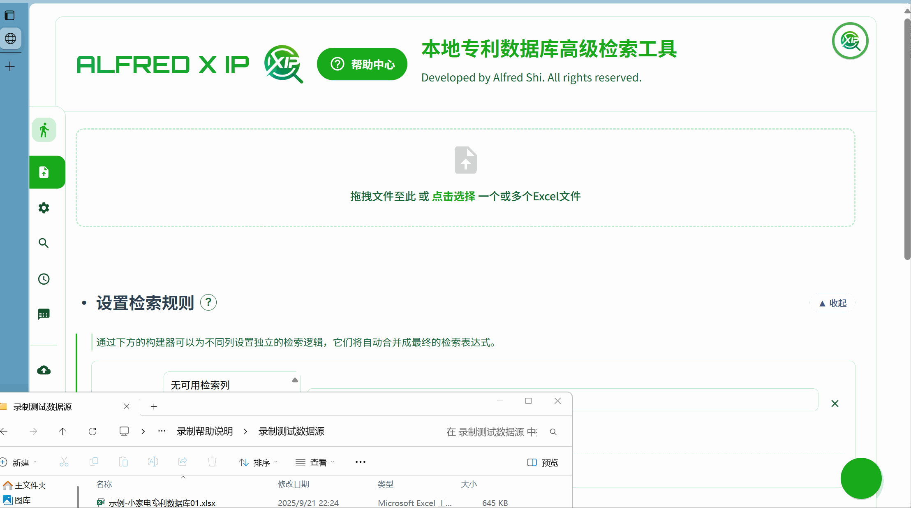
    
    <h2>第二步：配置数据列</h2>
    <p>在“定义数据源与列”卡片中，为每个数据源配置三类列，这是平台正常工作的关键。</p>
    <ul>
        <li><strong>标识列 (必选)：</strong> 选择能唯一识别一条数据的列，如“申请号”。所有个性化功能（收藏、标注）都依赖它。</li>
        <li><strong>同族列 (可选)：</strong> 选择包含同族公开号信息的列，如“同族公开号”。同族详情跳转链接功能都依赖它。</li>
        <li><strong>参与检索的列：</strong> 勾选您希望被搜索的文本列，如“标题”、“摘要”、“权利要求书”等。</li>
        <li><strong>结果中显示的列：</strong> 勾选您想在结果表格中看到的列。</li>
    </ul>
    <div class="alert alert-info">
        <div class="alert-icon"><svg xmlns="http://www.w3.org/2000/svg" width="24" height="24" viewBox="0 0 24 24" fill="none" stroke="currentColor" stroke-width="2" stroke-linecap="round" stroke-linejoin="round"><path d="M12 20h9"></path><path d="M16.5 3.5a2.12 2.12 0 0 1 3 3L7 19l-4 1 1-4Z"></path></svg></div>
        <div><strong>智能记忆：</strong> 平台会根据“文件名+工作表名”自动记住您的配置。下次加载相同数据源时，将自动应用上次的配置。</div>
    </div>
    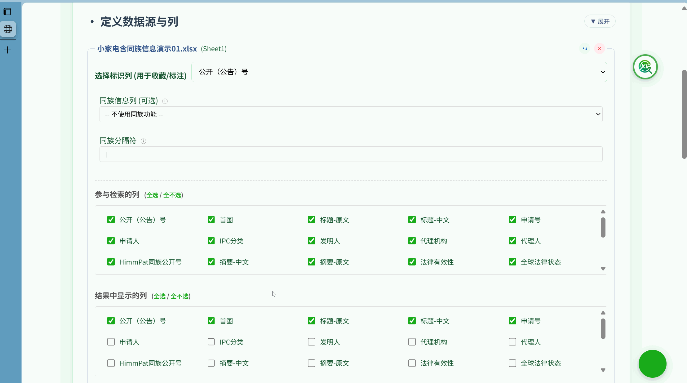
    
    <h2>第三步：开始检索</h2>
    <p>在“设置检索规则”区域，使用“检索字段构建器”添加规则，或直接在下方的“专家检索式”框中输入查询。然后点击绿色的“开始检索”按钮。</p>
    
    
    <h2>第四步：管理检索结果</h2>
    <p>检索完成后，您可以浏览结果、收藏（通过点击<svg xmlns="http://www.w3.org/2000/svg" style="width:1em; height:1em; vertical-align:-0.125em;" viewBox="0 0 24 24" fill="none" stroke="currentColor" stroke-width="2" stroke-linecap="round" stroke-linejoin="round"><polygon points="12 2 15.09 8.26 22 9.27 17 14.14 18.18 21.02 12 17.77 5.82 21.02 7 14.14 2 9.27 8.91 8.26 12 2"></polygon></svg>图标）或标注重要条目，并可随时将结果导出为新的Excel文件。</p>
    
    <div class="alert alert-info">
        <div class="alert-icon"><svg xmlns="http://www.w3.org/2000/svg" width="24" height="24" viewBox="0 0 24 24" fill="none" stroke="currentColor" stroke-width="2" stroke-linecap="round" stroke-linejoin="round"><path d="M12 20h9"></path><path d="M16.5 3.5a2.12 2.12 0 0 1 3 3L7 19l-4 1 1-4Z"></path></svg></div>
 <div><strong>恭喜！您已完成一次完整的检索流程。如需深入了解各项功能，请继续浏览本帮助文档的详细章节。</strong></div>

</script>

<script type="text/html" id="tpl-data-loading">
    <h1>加载与管理数据</h1>
    <h2>加载新数据</h2>
    <p>平台支持灵活的文件加载方式，您可以随时向工作区添加新的数据源。</p>
    <ul>
        <li><strong>拖拽加载：</strong> 从电脑文件夹中，将一个或多个Excel文件（<code>.xlsx</code>, <code>.xls</code>）拖拽到浏览器窗口任意位置。</li>
        <li><strong>点击加载：</strong> 点击主界面的文件选择区，或右上角的“+ 补充文件”按钮来选择文件。</li>
    </ul>
    
    <div class="alert alert-warning">
        <div class="alert-icon"><svg xmlns="http://www.w3.org/2000/svg" width="24" height="24" viewBox="0 0 24 24" fill="none" stroke="currentColor" stroke-width="2" stroke-linecap="round" stroke-linejoin="round"><path d="m21.73 18-8-14a2 2 0 0 0-3.46 0l-8 14A2 2 0 0 0 4 21h16a2 2 0 0 0 1.73-3Z"></path><line x1="12" y1="9" x2="12" y2="13"></line><line x1="12" y1="17" x2="12.01" y2="17"></line></svg></div>
        <div><strong>重要提示:</strong> 单次上传文件不得超过<strong>40MB</strong>。导入大文件时需要耐心等待加载进程完成。</div>
    </div>

    <h2>处理多工作表 (Multi-Sheet) 文件</h2>
    <p>如果您的Excel文件包含多个工作表(Sheet)，平台会自动检测并弹出一个选择窗口。您可以按需选择一个或多个工作表进行加载。每个被选中的工作表都将作为一个独立的数据源进行管理。</p>
    
    <h2>管理已加载的数据源</h2>
    <p>所有管理操作都在“定义数据源与列”卡片中进行：</p>
    <ul>
        <li><strong>更换/补充工作表：</strong> 点击数据源卡片右上角的<svg xmlns="http://www.w3.org/2000/svg" style="width:1.1em; height:1.1em; vertical-align:-0.15em; color: #1e88e5;" viewBox="0 0 24 24" fill="none" stroke="currentColor" stroke-width="2" stroke-linecap="round" stroke-linejoin="round"><path d="m21.73 18-8-14a2 2 0 0 0-3.46 0l-8 14A2 2 0 0 0 4 21h16a2 2 0 0 0 1.73-3Z"></path><path d="M12 9v4"></path></svg>图标，可以从同一源文件中加载其他工作表。</li>
        <li><strong>删除数据源：</strong> 点击数据源卡片右上角的<svg xmlns="http://www.w3.org/2000/svg" style="width:1.1em; height:1.1em; vertical-align:-0.15em; color: #E53935;" viewBox="0 0 24 24" fill="none" stroke="currentColor" stroke-width="2" stroke-linecap="round" stroke-linejoin="round"><polyline points="3 6 5 6 21 6"></polyline><path d="M19 6v14a2 2 0 0 1-2 2H7a2 2 0 0 1-2-2V6m3 0V4a2 2 0 0 1 2-2h4a2 2 0 0 1 2 2v2"></path></svg>图标，可以从当前工作区移除该数据源及其所有配置。</li>
    </ul>
    <div class="alert alert-warning">
        <div class="alert-icon"><svg xmlns="http://www.w3.org/2000/svg" width="24" height="24" viewBox="0 0 24 24" fill="none" stroke="currentColor" stroke-width="2" stroke-linecap="round" stroke-linejoin="round"><path d="m21.73 18-8-14a2 2 0 0 0-3.46 0l-8 14A2 2 0 0 0 4 21h16a2 2 0 0 0 1.73-3Z"></path><line x1="12" y1="9" x2="12" y2="13"></line><line x1="12" y1="17" x2="12.01" y2="17"></line></svg></div>
        <div><strong>注意：</strong> 删除数据源会清除该源的数据和配置，此操作无法撤销。但不会影响您的检索历史和收藏夹中的内容。</div>
    </div>
</script>

<script type="text/html" id="tpl-data-config">
    <h1>配置数据列</h1>
    <p>正确配置数据列是平台所有检索和分析功能正常运行的基础。所有配置都在“定义数据源与列”卡片中完成。</p>
    
    <h2>标识列 (Identifier Column)</h2>
    <p>这是<strong>必须配置</strong>的关键项。您必须为每个数据源选择一个“标识列”。</p>
    <ul>
        <li><strong>作用：</strong> 标识列是平台用来唯一识别每一行数据的“身份证”。它通常是专利的“申请号”、“公开号”等具有唯一性的字段。</li>
        <li><strong>依赖此项的功能：</strong> 结果收藏、标注、已读标记等所有需要精确定位到某一行数据的个性化功能，都依赖于此列的正确设置。</li>
    </ul>

    <h2>参与检索的列 (Searchable Columns)</h2>
    <p>在此处勾选的列，将共同构成每条数据的“全文”。执行检索时，平台将<strong>仅</strong>在这些勾选的列中进行文本匹配。</p>
    <ul>
        <li><strong>策略：</strong> 如果您想进行技术方案的全面检索，则应勾选“标题”、“摘要”、“权利要求书”和“说明书”等所有相关文本列。如果只想检索特定字段，则只勾选目标列。</li>
    </ul>

    <h2>结果中显示的列 (Display Columns)</h2>
    <p>在此处勾选的列，决定了检索完成后，结果表格中会显示哪些列。这有助于您在结果界面中关注最重要的信息，保持界面整洁。</p>
    
    <div class="alert alert-info">
        <div class="alert-icon"><svg xmlns="http://www.w3.org/2000/svg" width="24" height="24" viewBox="0 0 24 24" fill="none" stroke="currentColor" stroke-width="2" stroke-linecap="round" stroke-linejoin="round"><path d="M12 20h9"></path><path d="M16.5 3.5a2.12 2.12 0 0 1 3 3L7 19l-4 1 1-4Z"></path></svg></div>
        <div><strong>智能记忆与快捷操作：</strong> 平台会自动记住您对每个数据源的配置。您也可以使用列配置区域的“全选/全不选”链接来快速勾选。</div>
    </div>
    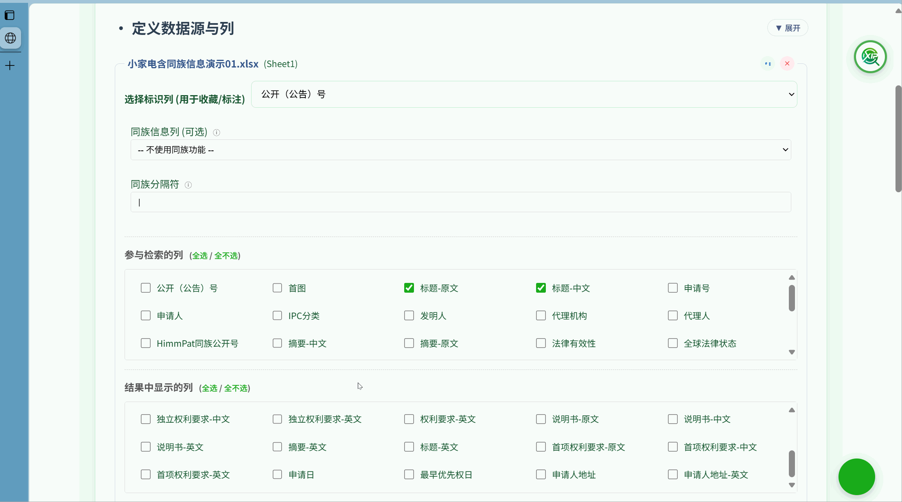
</script>

<script type="text/html" id="tpl-family-config">
    <h1>同族信息配置与链接</h1>
    <p>平台支持配置同族专利信息列,实现同族专利之间的快速跳转和查看。这对于需要了解专利家族布局或进行跨国专利分析的场景非常有用。</p>

    <h2>配置同族列</h2>
    <p>在数据源配置区域,您可以为每个数据源指定一个"同族列"。</p>
    <ul>
        <li><strong>选择同族列:</strong> 在数据列配置卡片中,找到"同族列"配置选项,从下拉列表中选择包含同族专利号的列(如"同族专利号"、"PCT申请号"等)。</li>
        <li><strong>同族号格式:</strong> 平台会自动识别单元格内的专利号,支持多种常见格式(如CN201910123456.7、US2019/0123456等)。</li>
        <li><strong>智能记忆:</strong> 与其他列配置一样,同族列的配置会被自动保存,下次加载相同数据源时自动应用。</li>
    </ul>

    <h2>同族快速跳转</h2>
    <p>配置同族列后,在检索结果表格和详情窗口中,该列的显示方式会发生变化:</p>
    <ul>
        <li><strong>表格中的链接:</strong> 同族列中的每个专利号都会显示为可点击的链接样式(蓝色、带下划线)。</li>
        <li><strong>一键跳转:</strong> 点击任意同族专利号链接,平台会自动在当前结果集中定位并跳转到该专利的详细信息。如果该专利在当前结果集中,会直接打开其详情窗口;如果不在,则会提示"当前结果集中未找到该专利"。</li>
        <li><strong>详情窗口联动:</strong> 在单元格详情窗口中,同族列的专利号同样可以点击跳转,实现同族专利之间的无缝浏览。</li>
    </ul>

    <h3>应用场景示例</h3>
    <ul>
        <li><strong>专利家族分析:</strong> 检索到一件中国专利后,快速查看其对应的美国、欧洲等同族专利的详细信息。</li>
        <li><strong>优先权追溯:</strong> 从后续申请快速跳转到原始优先权文件进行对比分析。</li>
        <li><strong>PCT家族追踪:</strong> 从PCT国际申请跳转到各国国家阶段进入的专利文献。</li>
    </ul>

    <div class="alert alert-info">
        <div class="alert-icon"><svg xmlns="http://www.w3.org/2000/svg" width="24" height="24" viewBox="0 0 24 24" fill="none" stroke="currentColor" stroke-width="2" stroke-linecap="round" stroke-linejoin="round"><path d="M12 20h9"></path><path d="M16.5 3.5a2.12 2.12 0 0 1 3 3L7 19l-4 1 1-4Z"></path></svg></div>
        <div><strong>提示:</strong> 同族跳转功能依赖于标识列的正确配置。平台会通过比对同族专利号与各条目的标识列值来实现精确定位。</div>
    </div>
    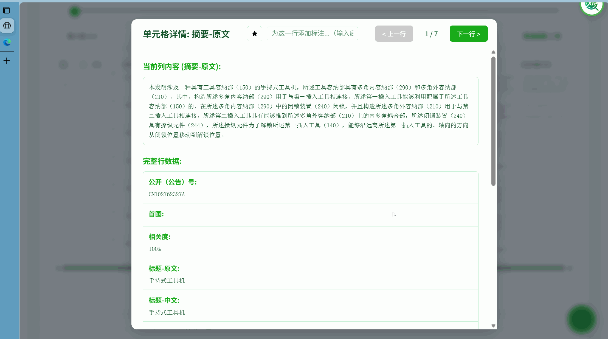
</script>

<script type="text/html" id="tpl-search-overview">
    <h1>检索功能总览</h1>
    <p>平台提供了多层次的检索功能，从直观的可视化操作到灵活的专业语法，满足不同场景下的检索需求。其核心设计是：<strong>“检索字段构建器”的可视化操作与“专家检索式”的文本输入之间保持智能双向同步。</strong></p>
    
    <h2>推荐工作流</h2>
    <div class="workflow-diagram">
        <div class="workflow-step">
            <div class="step-number">1</div>
            <div class="step-content">
                <strong>构建基础查询</strong>
                <p>使用<strong>字段构建器</strong>搭建主要的查询逻辑，为不同字段设置独立的检索条件。</p>
            </div>
        </div>
        <div class="workflow-arrow"></div>
        <div class="workflow-step">
            <div class="step-number">2</div>
            <div class="step-content">
                <strong>优化检索式</strong>
                <p>在<strong>专家检索式</strong>框中对生成的语句进行微调，添加通配符、邻近算符等高级语法。</p>
            </div>
        </div>
        <div class="workflow-arrow"></div>
        <div class="workflow-step">
            <div class="step-number">3</div>
            <div class="step-content">
                <strong>结果集合运算</strong>
                <p>利用<strong>历史与集合运算</strong>对多个结果集进行组合，实现更复杂的筛选逻辑。</p>
            </div>
        </div>
        <div class="workflow-arrow"></div>
        <div class="workflow-step">
            <div class="step-number">4</div>
            <div class="step-content">
                <strong>二次筛选</strong>
                <p>在当前结果集内，使用<strong>二次筛选</strong>功能快速缩小范围，或探索特定子集。</p>
            </div>
        </div>
        <div class="workflow-arrow"></div>
        <div class="workflow-step">
            <div class="step-number">5</div>
            <div class="step-content">
                <strong>保存复用</strong>
                <p>将常用的检索式添加到<strong>检索式收藏</strong>中，方便后续一键调用。</p>
            </div>
        </div>
    </div>
    
    <h2>核心优势</h2>
    <div class="feature-grid" style="grid-template-columns: 1fr 1fr; gap: 25px;">
        <div class="advantage-item" style="display: flex; gap: 15px; align-items: flex-start; padding: 20px;">
            <div class="feature-icon" style="margin-top: 3px;"><svg xmlns="http://www.w3.org/2000/svg" width="28" height="28" viewBox="0 0 24 24" fill="none" stroke="currentColor" stroke-width="2" stroke-linecap="round" stroke-linejoin="round"><path d="M17 2.1l4 4-4 4"></path><path d="M3 12.6v-2.1c0-4.1 3.3-7.4 7.4-7.4h10.2"></path><path d="M7 21.9l-4-4 4-4"></path><path d="M21 11.4v2.1c0 4.1-3.3 7.4-7.4 7.4H3.4"></path></svg></div>
            <div>
                <h4 style="margin:0 0 5px 0; font-size: 1.1rem;">双向智能同步</h4>
                <p style="margin:0; font-size: 0.95rem;">字段构建器与专家检索式实时同步，兼顾易用性与灵活性。</p>
            </div>
        </div>
        <div class="advantage-item" style="display: flex; gap: 15px; align-items: flex-start; padding: 20px;">
            <div class="feature-icon" style="margin-top: 3px;"><svg xmlns="http://www.w3.org/2000/svg" width="28" height="28" viewBox="0 0 24 24" fill="none" stroke="currentColor" stroke-width="2" stroke-linecap="round" stroke-linejoin="round"><polygon points="13 2 3 14 12 14 11 22 21 10 12 10 13 2"></polygon></svg></div>
            <div>
                <h4 style="margin:0 0 5px 0; font-size: 1.1rem;">高效本地处理</h4>
                <p style="margin:0; font-size: 0.95rem;">所有检索运算均在本地完成，响应迅速，确保数据安全。</p>
            </div>
        </div>
        <div class="advantage-item" style="display: flex; gap: 15px; align-items: flex-start; padding: 20px;">
            <div class="feature-icon" style="margin-top: 3px;"><svg xmlns="http://www.w3.org/2000/svg" width="28" height="28" viewBox="0 0 24 24" fill="none" stroke="currentColor" stroke-width="2" stroke-linecap="round" stroke-linejoin="round"><path d="M21 15a2 2 0 0 1-2 2H7l-4 4V5a2 2 0 0 1 2-2h14a2 2 0 0 1 2 2z"></path></svg></div>
            <div>
                <h4 style="margin:0 0 5px 0; font-size: 1.1rem;">丰富语法支持</h4>
                <p style="margin:0; font-size: 0.95rem;">提供专业检索语法，包括字段、逻辑、邻近、通配符等高级功能。</p>
            </div>
        </div>
        <div class="advantage-item" style="display: flex; gap: 15px; align-items: flex-start; padding: 20px;">
            <div class="feature-icon" style="margin-top: 3px;"><svg xmlns="http://www.w3.org/2000/svg" width="28" height="28" viewBox="0 0 24 24" fill="none" stroke="currentColor" stroke-width="2" stroke-linecap="round" stroke-linejoin="round"><path d="M4 19.5A2.5 2.5 0 0 1 6.5 17H20"></path><path d="M6.5 2H20v20H6.5A2.5 2.5 0 0 1 4 19.5v-15A2.5 2.5 0 0 1 6.5 2z"></path></svg></div>
            <div>
                <h4 style="margin:0 0 5px 0; font-size: 1.1rem;">历史与收藏管理</h4>
                <p style="margin:0; font-size: 0.95rem;">自动记录检索历史，支持收藏和管理常用检索式，提升工作效率。</p>
            </div>
        </div>
    </div>
</script>

<script type="text/html" id="tpl-field-builder">
    <h1>检索字段构建器</h1>
    <p>“检索字段构建器”是平台推荐的查询构建工具。它将复杂的检索逻辑分解为一行行的可视化规则，让您无需记忆语法即可构建精确的多字段查询。</p>
    
    <h2>核心交互：双向同步</h2>
    <p>本平台的一个关键特性是构建器与专家检索式输入框的<strong>双向同步</strong>：</p>
    <ul>
        <li><strong>正向生成：</strong> 您在构建器中的任何操作（添加规则、选择字段、输入关键词）都会实时地在下方的“专家检索式”框中生成对应的标准查询语句。</li>
        <li><strong>反向解析：</strong> 如果您直接在“专家检索式”框中<strong>修改或粘贴</strong>合法的查询语句，构建器会尝试理解并自动将其<strong>解析还原</strong>为对应的可视化规则行。这是一个极佳的学习和验证工具。</li>
    </ul>
    
    <h2>使用方法</h2>
    <ol>
        <li>点击“添加字段规则”来创建一条新规则。</li>
        <li><strong>选择字段：</strong> 从左侧的字段选择器中选择一个或多个字段。按住<code>Ctrl</code>(或<code>Cmd</code>)可多选，多选的字段将以<code>OR</code>逻辑组合。</li>
        <li><strong>输入检索内容：</strong> 在中间的输入框内，输入针对这些字段的查询词。这里同样支持<code>AND</code>, <code>OR</code>, <code>"短语"</code>等基础语法。</li>
        <li><strong>设置行间逻辑：</strong> 对于第二行及之后的规则，您可以在最左侧选择它与上一条规则的关系（<code>AND</code>, <code>OR</code>, <code>NOT</code>）。</li>
    </ol>
    
</script>

<script type="text/html" id="tpl-expert-search">
    <h1>检索式语法规则</h1>
    <p>“专家检索式”为专业用户提供了最大的检索灵活性。您可以在“设置检索规则”区域下方的输入框中自由组合各种检索运算符。</p>
    <div class="alert alert-info">
        <div class="alert-icon"><svg xmlns="http://www.w3.org/2000/svg" width="24" height="24" viewBox="0 0 24 24" fill="none" stroke="currentColor" stroke-width="2" stroke-linecap="round" stroke-linejoin="round"><circle cx="12" cy="12" r="10"></circle><line x1="12" y1="16" x2="12" y2="12"></line><line x1="12" y1="8" x2="12.01" y2="8"></line></svg></div>
        <div><strong>智能默认逻辑：</strong> 当您仅使用空格分隔关键词时，平台会自动将其解析为 <code>AND</code> 逻辑。例如，输入 <code>电池 固态</code> 等同于输入 <code>电池 AND 固态</code>。</div>
    </div>
    
    <h2>核心语法：字段检索</h2>
    <p>您可以将查询限定在特定字段内，格式为 <code>字段名:(检索内容)</code>。字段名必须与Excel表头完全一致，括号内的检索内容可以是任意复杂的表达式。</p>
    <p><strong>示例：</strong> <code>权利要求:(电池 AND (保护板 OR BMS)) AND 摘要:(浸水 OR 泡水)</code></p>
    
    <h2>逻辑与排除算符</h2>
    <p>这些算符用于组合关键词，控制检索结果的范围。</p>
    <table><thead><tr><th>语法</th><th>含义</th><th>说明</th></tr></thead><tbody>
        <tr><td><code>AND</code></td><td>与</td><td>查找同时包含多个关键词的记录。</td></tr>
        <tr><td><code>OR</code></td><td>或</td><td>查找包含任意一个关键词的记录。</td></tr>
        <tr><td><code>( )</code></td><td>括号</td><td>提升括号内表达式的运算优先级。</td></tr>
        <tr><td><code>" "</code></td><td>精确匹配</td><td>将词组视为一个整体进行查找，如 <code>"磷酸铁锂电池"</code>。</td></tr>
        <tr><td><code>NOT</code></td><td>全局排除</td><td>只要文本中出现该词，整条记录<strong>绝对不会</strong>被检出。优先级最高。</td></tr>

    </tbody></table>

    <h2>邻近与结构算符</h2>
    <p>用于限定关键词在文本中的位置关系，提高检索的精准度。</p>
    <table><thead><tr><th>语法</th><th>含义</th><th>示例</th></tr></thead><tbody>
        <tr><td><code>ADJ + 数字</code></td><td>顺序邻近</td><td><code>热 ADJ5 失控</code> (热..失控，中间不超过5个词)</td></tr>
        <tr><td><code>NEAR + 数字</code></td><td>无序邻近</td><td><code>电池 NEAR10 过热</code> (电池和过热相距不超过10个词)</td></tr>
        <tr><td><code>S</code></td><td>同句</td><td><code>电池 S 安全</code> (电池和安全出现在同一句)</td></tr>
        <tr><td><code>P</code></td><td>同段</td><td><code>电池 P 保护板</code> (电池和保护板出现在同一段)</td></tr>
        <tr><td><code>NOTS</code></td><td>同句排除</td><td>当所有命中词与排除词<strong>都</strong>出现在<strong>同一句话</strong>中时，排除该记录。</td></tr>
        <tr><td><code>NOTP</code></td><td>同段排除</td><td>当所有命中词与排除词<strong>都</strong>出现在<strong>同一段落</strong>中时，排除该记录。</td></tr>
    </tbody></table>
    <p><strong>排除示例:</strong> <code>"热失控" NOTS "模拟"</code><br>含义：查找包含“热失控”的记录，但如果“热失控”这个词是和“模拟”都是出现在同一句话里（例如讨论仿真模拟），则排除这条结果。</p>


    <h2>通配符与词频算符</h2>
    <table><thead><tr><th>语法</th><th>含义</th><th>示例</th></tr></thead><tbody>
        <tr><td><code>*</code></td><td>多字符通配</td><td><code>电*</code> (匹配“电池”、“电动工具”等)</td></tr>
        <tr><td><code>?</code></td><td>单字符通配</td><td><code>?电池</code> (匹配“蓄电池”和“锂电池”)</td></tr>
        <tr><td><code>FREQ(词, N)</code></td><td>词频</td><td><code>FREQ(电机, 3)</code> (电机至少出现3次)</td></tr>
    </tbody></table>
</script>
    
<script type="text/html" id="tpl-history-set">
    <h1>检索历史与集合运算</h1>
    <p>此功能帮助您高效管理和复用之前的检索结果。系统会自动保存您的检索历史，您可以快速调用，或将多个结果集进行逻辑运算。</p>
    
    <h2>检索历史</h2>
    <p>平台会自动保存近期的检索记录，显示在“检索历史与收藏”卡片中。</p>
    <ul>
        <li><strong>唯一序号：</strong> 每条记录都有一个蓝色序号（如<code>#1</code>），用于后续的集合运算。</li>
        <li><strong>快速复用：</strong> 点击历史记录中的查询语句，可将其恢复到检索框。</li>
        <li><strong>收藏转化：</strong> 点击记录右侧的 <svg xmlns="http://www.w3.org/2000/svg" style="width:1em; height:1em; vertical-align:-0.125em;" viewBox="0 0 24 24" fill="none" stroke="currentColor" stroke-width="2" stroke-linecap="round" stroke-linejoin="round"><polygon points="12 2 15.09 8.26 22 9.27 17 14.14 18.18 21.02 12 17.77 5.82 21.02 7 14.14 2 9.27 8.91 8.26 12 2"></polygon></svg> 星标，可将其保存到“检索式收藏”中。</li>
    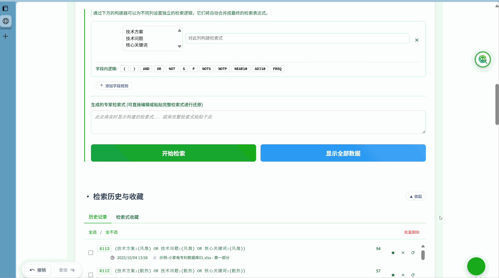
    </ul>
    
    <h2>集合运算</h2>
    <p>这是一个高级功能，允许您对已有的检索结果集进行高效的逻辑运算。</p>
    <p><strong>使用方法：</strong>在“集合运算”输入框中，使用历史记录的序号（如<code>#1</code>, <code>#2</code>）和逻辑运算符（<code>AND</code>, <code>OR</code>, <code>NOT</code>）构建表达式，然后点击“运算”。</p>
    <p><strong>场景示例：</strong> 假设#1是“电池安全性”的结果，#2是“热失控”的结果，#3是“短路”的结果。想查找与“电池安全性”相关，且涉及“热失控”或“短路”的专利，可输入 <code>#1 AND (#2 OR #3)</code>。</p>
    
    <h3>常见运算组合</h3>
    <table>
        <thead><tr><th>运算表达式</th><th>含义</th><th>适用场景</th></tr></thead>
        <tbody>
            <tr><td><code>#1 AND #2</code></td><td>交集</td><td>缩小范围，获取更精准的结果。</td></tr>
            <tr><td><code>#1 OR #2</code></td><td>并集</td><td>扩大范围，合并不同主题的结果。</td></tr>
            <tr><td><code>#1 NOT #2</code></td><td>差集</td><td>从一个结果集中排除另一类结果。</td></tr>
        </tbody>
    </table>
    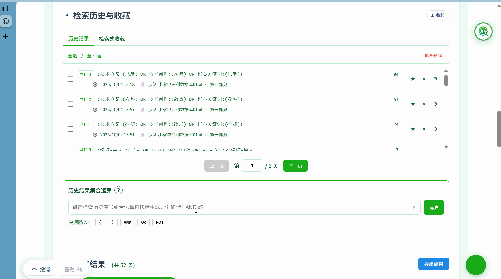
</script>

<script type="text/html" id="tpl-query-favorites">
    <h1>检索式收藏</h1>
    <p>对于常用或结构复杂的检索式，您可以通过收藏功能进行保存和管理，方便未来快速调用。</p>
    
    <h2>如何收藏</h2>
    <ol>
        <li>执行一次检索。</li>
        <li>在“检索历史与收藏”卡片的“历史记录”标签页中，找到您想收藏的记录。</li>
        <li>点击该记录右侧的 <svg xmlns="http://www.w3.org/2000/svg" style="width:1em; height:1em; vertical-align:-0.125em;" viewBox="0 0 24 24" fill="none" stroke="currentColor" stroke-width="2" stroke-linecap="round" stroke-linejoin="round"><polygon points="12 2 15.09 8.26 22 9.27 17 14.14 18.18 21.02 12 17.77 5.82 21.02 7 14.14 2 9.27 8.91 8.26 12 2"></polygon></svg> 星标。</li>
        <li>在弹出的窗口中为其设置一个有意义的名称，点击确认即可。</li>
    </ol>
    
    <h2>如何使用</h2>
    <ul>
        <li>切换到“检索式收藏”标签页。</li>
        <li>点击您收藏的任意条目，其对应的查询语句会自动填充到上方的“专家检索式”输入框中，之后您可直接检索或进行修改。</li>
    </ul>
    
    <h3>命名建议</h3>
    <p>良好的命名习惯有助于管理。建议名称能反映检索式的核心目的，例如：</p>
    <ul>
        <li><strong>按技术主题：</strong> “电池热失控-核心方案”</li>
        <li><strong>按项目名称：</strong> “XX项目-现有技术检索-v1”</li>
        <li><strong>按竞争对手：</strong> “监控-A公司-电源管理专利”</li>
    </ul>
    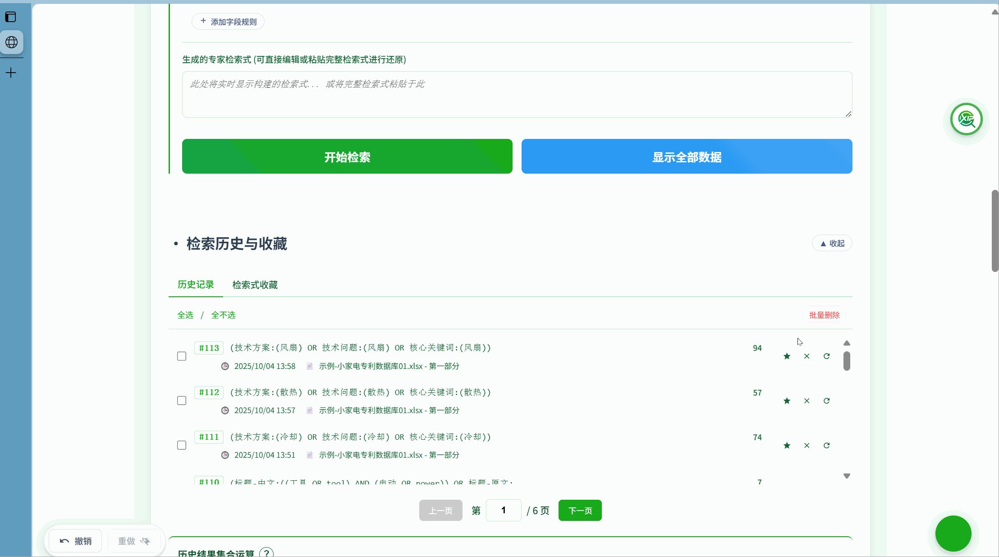
</script>

<script type="text/html" id="tpl-result-table">
    <h1>检索结果表格显示</h1>
    <p>平台提供了丰富的表格交互功能，帮助您高效浏览和分析检索结果。</p>
    
    <h2>基本操作</h2>
    <ul>
        <li><strong>分页：</strong> 使用表格底部的分页控件浏览全部结果。</li>
        <li><strong>已读标记：</strong> 浏览过的结果行会自动标记为已读，帮助您追踪阅读进度。</li>
    </ul>
        
    <h2>查看详情与沉浸式浏览</h2>
    <p>对于内容较长的单元格，平台提供了强大的详情查看功能，并支持沉浸式的连续浏览体验。</p>

    <h3>打开详情窗口</h3>
    <ul>
        <li><strong>表格内查看：</strong> 在结果表格中，点击内容过长的单元格，会弹出详情窗口，显示该单元格的完整内容。</li>
        <li><strong>收藏夹查看：</strong> 在"检索结果收藏夹"中，点击收藏项的"查看详情"按钮，会弹出包含该条目所有信息的详情窗口。</li>
        <li><strong>行级详情：</strong> 点击结果表格中任意行的"查看详情"按钮，可以打开包含该条记录所有字段信息的完整详情窗口。</li>
    </ul>

    <h3>沉浸式浏览功能</h3>
    <p>详情窗口提供了强大的沉浸式浏览模式，让您可以专注于内容阅读和分析，而无需频繁返回表格：</p>
    <ul>
        <li><strong>键盘导航：</strong> 使用键盘的<strong>左右方向键（← →）</strong>可以在当前结果集的所有记录之间快速切换，无需关闭详情窗口。</li>
        <li><strong>收藏夹专属浏览：</strong> 当从收藏夹打开详情窗口时，左右方向键会在<strong>收藏的结果</strong>之间切换，实现精读收藏内容的连续浏览体验。</li>
        <li><strong>自动高亮：</strong> 详情窗口中，所有匹配的检索关键词会自动高亮显示，便于快速定位关键信息。</li>
        <li><strong>同族链接：</strong> 如果配置了同族列，详情窗口中的同族专利号会显示为可点击的链接，点击即可跳转到同族专利的详情。</li>
        <li><strong>位置指示：</strong> 窗口顶部会显示当前浏览位置（如"3/50"），让您清楚地知道阅读进度。</li>
        <li><strong>即时编辑：</strong> 在详情窗口中，您可以直接编辑标注内容，修改会立即保存并同步到表格。</li>
    </ul>

    <h3>快捷键总览</h3>
    <table>
        <thead><tr><th>快捷键</th><th>功能</th></tr></thead>
        <tbody>
            <tr><td><code>→</code> （右方向键）</td><td>查看下一条记录</td></tr>
            <tr><td><code>←</code> （左方向键）</td><td>查看上一条记录</td></tr>
            <tr><td><code>Esc</code></td><td>关闭详情窗口</td></tr>
        </tbody>
    </table>

    <div class="alert alert-info">
        <div class="alert-icon"><svg xmlns="http://www.w3.org/2000/svg" width="24" height="24" viewBox="0 0 24 24" fill="none" stroke="currentColor" stroke-width="2" stroke-linecap="round" stroke-linejoin="round"><path d="M14 2H6a2 2 0 0 0-2 2v16a2 2 0 0 0 2 2h12a2 2 0 0 0 2-2V8z"></path><polyline points="14 2 14 8 20 8"></polyline><line x1="12" y1="18" x2="12" y2="12"></line><line x1="9" y1="15" x2="15" y2="15"></line></svg></div>
        <div><strong>高效阅读：</strong> 沉浸式浏览模式特别适合精读场景。建议先通过检索和筛选锁定目标结果集或收藏夹，然后进入沉浸式浏览模式进行深度分析。</div>
    </div>

    <h2>表格布局自定义</h2>
    <p>您可以根据个人偏好调整表格的布局，所有调整都会被自动保存在本地浏览器中。</p>
    <ul>
        <li><strong>调整列顺序：</strong> 按住表头，直接用鼠标左右拖动，即可改变列的显示顺序。</li>
        <li><strong>调整列宽：</strong> 将鼠标悬停在表头之间的分隔线上，光标变为可拖动状态时，按住并拖动即可调整列宽。</li>
        <li><strong>表格缩放：</strong> 在结果区的右上角，使用缩放控件（<code>+</code> / <code>-</code>）可以调整表格的整体显示大小。</li>
    </ul>
    
</script>

<script type="text/html" id="tpl-secondary-filter">
    <h1>检索结果筛选与排序</h1>
    <p>在获得初步检索结果后，平台提供强大的二次筛选和高级排序功能，帮助您在结果集中进行更精细的探索和定位。</p>
    
    <h2>二次筛选</h2>
    <p>二次筛选允许您在<strong>当前结果集</strong>的基础上进一步缩小范围，而无需重新执行全局检索，速度更快，逻辑更清晰。</p>
    <p><strong>使用方法：</strong> 在结果区顶部的“在结果中进行高级检索式二次筛选”输入框中，输入新的检索条件，然后点击“筛选”。</p>
    <p><strong>场景示例：</strong> 您的第一次检索是 <code>电池 AND 安全性</code>，得到500条结果。现在，您想看看这500条结果中，有哪些是关于“热失控”且申请人是“宁德时代”的。只需在二次筛选框中输入 <code>热失控 AND "宁德时代"</code> 并筛选即可。</p>
    <ul>
        <li><strong>语法支持：</strong> 二次筛选框同样支持所有专家检索式语法。</li>
        <li><strong>范围指定：</strong> 您可以勾选下方的复选框，来决定二次筛选是在哪些列中进行。</li>
        <li><strong>快速重置：</strong> 点击“重置”链接，可以立刻清除二次筛选条件，返回到原始的检索结果集。</li>
    </ul>
    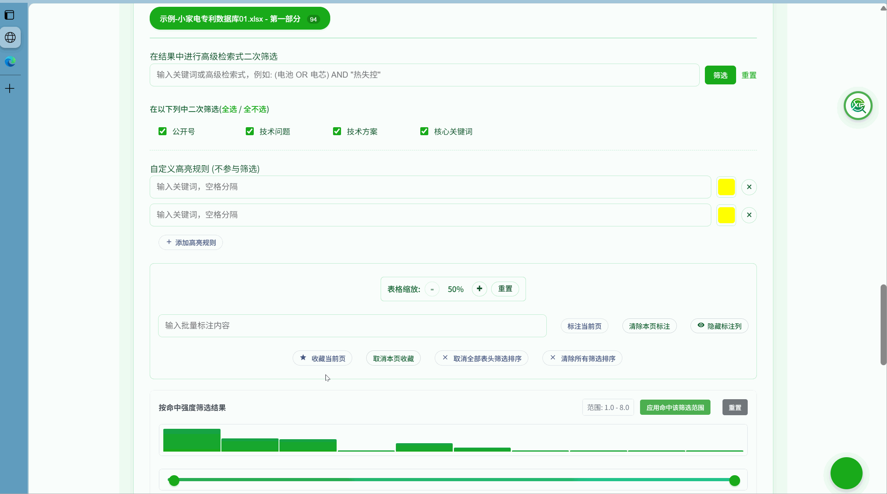
    
    <h2>高级排序与列筛选</h2>
    <p>平台提供了类似Excel的高级表头功能，让您能够更精细地控制数据展示。</p>
    <ul>
        <li><strong>多列组合排序：</strong> 按住<code>Shift</code>键并依次点击多个列的表头，可以实现多重排序。例如，先按“申请日”降序，再按住<code>Shift</code>点击“申请人”升序。</li>
        <li><strong>列值筛选：</strong> 点击部分列表头右侧的筛选图标，可以按该列的具体值进行不同规则筛选（如筛选特定申请人、特定法律状态等），还可以设置两组筛选规则耦合。</li>
    </ul>
    </div>
    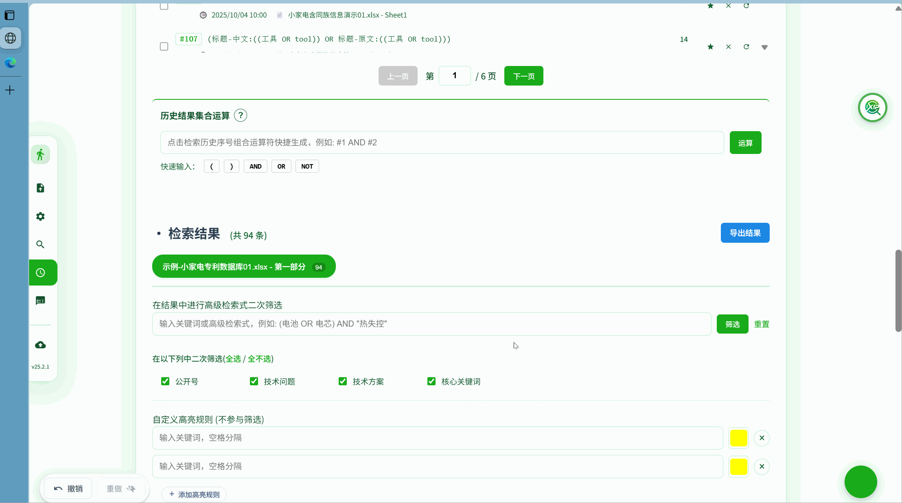
    
    <h2>命中强度排序与可视化筛选</h2>
    <p>平台提供智能的命中强度计算、排序和可视化筛选功能，帮助您快速识别和锁定与检索式最相关的结果。</p>

    <h3>命中强度计算原理</h3>
    <p>命中强度是基于以下因素综合计算得出的：</p>
    <ul>
        <li><strong>关键词匹配数量：</strong> 结果中匹配的关键词越多，强度值越高。</li>
        <li><strong>字段重要性权重：</strong> 不同字段（如标题、摘要、权利要求等）被赋予不同的权重值。</li>
        <li><strong>匹配位置：</strong> 关键词出现在重要位置时会获得更高的强度值。</li>
    </ul>

    <h3>命中强度排序</h3>
    <ul>
        <li>在检索结果表格中，找到<strong>命中强度</strong>列。</li>
        <li>点击<strong>命中强度</strong>列的表头，可以按照强度值进行升序或降序排列。</li>
        <li>排序后，系统会自动更新表格中的结果顺序，并在表头显示当前的排序方向。</li>
    </ul>

    <h3>命中强度可视化筛选</h3>
    <p>为了更直观地帮助您锁定高相关性结果，平台提供了可视化的命中强度筛选工具：</p>
    <ul>
        <li><strong>可视化区间选择器：</strong> 在检索结果区域，您会看到一个命中强度分布的可视化图表和双滑块控件。</li>
        <li><strong>拖动设置阈值：</strong> 拖动左右两个滑块，可以设置命中强度的<strong>最小值</strong>和<strong>最大值</strong>区间。只有命中强度在此区间内的结果才会被显示。</li>
        <li><strong>实时筛选：</strong> 滑块调整并应用后，表格会立即更新，只显示符合强度范围的结果，帮助您快速过滤噪音数据。</li>
        <li><strong>分布可视化：</strong> 区间选择器上方会显示当前结果集的命中强度分布柱状图，让您一眼了解结果的质量分布情况。</li>
        <li><strong>快速重置：</strong> 点击"重置"按钮可以立即清除强度筛选，恢复显示所有结果。</li>
    </ul>

    <h3>字段权重自定义设置</h3>
    <p>您可以根据自己的需求调整不同字段的重要性权重，以获得更符合您预期的排序结果：</p>
    <ul>
        <li>在<strong>字段权重设置</strong>区域，您可以看到当前参与检索的所有字段列表。</li>
        <li>使用<strong>滑块控件</strong>为每个字段设置0-5的权重值。</li>
        <li>权重设置会<strong>实时生效</strong>，并影响命中强度的计算和排序结果。</li>
        <li>当您更改参与检索的列时，字段权重设置区域会自动更新，仅显示当前选中的字段。</li>
    </ul>

    <h3>应用场景示例</h3>
    <ul>
        <li><strong>精准筛选：</strong> 当检索返回大量结果时，通过设置较高的命中强度最小值（如≥80），快速锁定核心相关专利。</li>
        <li><strong>发现边缘案例：</strong> 设置较低的强度区间（如10-30），探索弱相关但可能包含特殊技术路线的专利。</li>
        <li><strong>分层分析：</strong> 结合分布图，按强度分段阅读，先精读高强度结果，再浏览中低强度结果。</li>
    </ul>

    <div class="alert alert-info">
        <div class="alert-icon"><svg xmlns="http://www.w3.org/2000/svg" width="24" height="24" viewBox="0 0 24 24" fill="none" stroke="currentColor" stroke-width="2" stroke-linecap="round" stroke-linejoin="round"><path d="M14 2H6a2 2 0 0 0-2 2v16a2 2 0 0 0 2 2h12a2 2 0 0 0 2-2V8z"></path><polyline points="14 2 14 8 20 8"></polyline><line x1="12" y1="18" x2="12" y2="12"></line><line x1="9" y1="15" x2="15" y2="15"></line></svg></div>
        <div><strong>权重设置提醒：</strong> 系统默认对各字段赋予相同的初始权重值，合理设置字段权重可以细粒度扩大检索结果区分度。可视化筛选功能会记住您的偏好设置。</div>
    </div>
    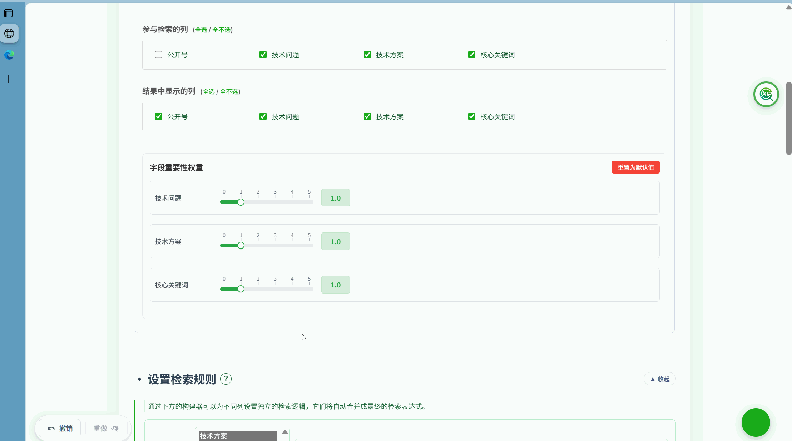
</script>

<script type="text/html" id="tpl-highlight-rules">
    <h1>检索结果高亮</h1>
    <p>平台提供多种高亮方式，帮助您在海量文本中快速识别和区分信息。高亮仅为视觉辅助，不影响筛选逻辑。</p>
    
    <h2>检索词高亮</h2>
    <p>执行检索或二次筛选时，系统会自动为检索式中的关键词分配不同颜色进行高亮，让您能直观地在结果文本中定位到命中内容。</p>

    <h2>自定义高亮规则</h2>
    <p>除了检索词自动高亮，您还可以根据自己的需求，设置全局的、持久化的自定义高亮规则。</p>
    <h3>设置步骤</h3>
    <ol>
        <li>在“检索结果”区域，找到“自定义高亮规则”模块。</li>
        <li>点击“添加高亮规则”按钮。</li>
        <li>在左侧输入框输入您想高亮的关键词（多个词用空格隔开）。</li>
        <li>在右侧颜色选择器中为其指定一种高亮颜色。</li>
        <li>您可以添加多条规则，为不同类型的信息（如公司名称、技术特征、人名等）设置不同颜色。</li>
    </ol>
    <p>设置完成后，所有结果中匹配到的关键词都会以您指定的颜色高亮显示。您的自定义规则会保存在浏览器中，下次使用时依然有效。</p>
    
</script>

<script type="text/html" id="tpl-annotation-batch">
    <h1>检索结果标注与批量操作</h1>
    <p>标注功能允许您对检索结果进行个性化标记，记录您的分析和思考。同时，平台也提供批量操作以提升效率。</p>
    
    <h2>单条标注</h2>
    <p>在结果表格的“标注”列中，您可以为任何一条结果添加笔记、评论或标签。</p>
    <ul>
        <li>点击标注单元格右侧的铅笔图标进入编辑模式。</li>
        <li>输入内容后，按回车键或让输入框失去焦点即可保存。</li>
        <li>所有标注都会被自动保存，并在导出Excel时一并导出。</li>
    </ul>

    <h3>标注内容示例</h3>
    <ul>
        <li><strong>技术要点：</strong> "核心创新点在于XX结构"</li>
        <li><strong>分类标签：</strong> "重点关注", "背景技术", "待讨论"</li>
        <li><strong>疑问记录：</strong> "需确认权利要求3的保护范围"</li>
    </ul>

    <h2>批量操作</h2>
    <p>为了提升处理大量数据时的效率，平台在结果区的顶部提供了批量操作功能。<strong>请注意，所有批量操作都只针对当前表格页面显示的结果。</strong></p>
    <ul>
        <li><strong>批量添加/覆盖标注：</strong> 在输入框中填入内容，然后点击“标注当前页”。</li>
        <li><strong>批量清除标注：</strong> 点击“清除本页标注”。</li>
    </ul>
    
</script>

<script type="text/html" id="tpl-result-favorites">
    <h1>检索结果收藏夹</h1>
    <p>收藏夹用于集中管理您认为有价值、需要后续精读或重点分析的专利。所有收藏记录都显示在页面右下角浮动的面板中。</p>
    
    <h2>如何收藏</h2>
    <ul>
        <li>在结果表格中，点击每一行最左侧的 <svg xmlns="http://www.w3.org/2000/svg" style="width:1em; height:1em; vertical-align:-0.125em;" viewBox="0 0 24 24" fill="none" stroke="currentColor" stroke-width="2" stroke-linecap="round" stroke-linejoin="round"><polygon points="12 2 15.09 8.26 22 9.27 17 14.14 18.18 21.02 12 17.77 5.82 21.02 7 14.14 2 9.27 8.91 8.26 12 2"></polygon></svg> 星标即可。星标变为激活状态（如黄色）表示已收藏。</li>
        <li>您也可以对当前页的结果进行批量收藏。</li>
    </ul>

    <h2>核心功能：收藏夹连续浏览</h2>
    <p>这是在对收藏结果进行精读时极为高效的功能，能带来如阅读幻灯片般顺滑的体验。</p>
    <ol>
        <li>将您感兴趣的结果加入收藏夹。</li>
        <li>打开右下角的收藏夹面板，点击任意一条结果的“查看详情”按钮。</li>
        <li>在弹出的详情窗口中，您可以使用<strong>键盘的左右方向键 (← →)</strong>或点击弹窗上的导航按钮，来快速切换并浏览您的<strong>所有收藏结果</strong>。</li>
    </ol>
    
</script>

<script type="text/html" id="tpl-export">
    <h1>检索结果导出</h1>
    <p>您可以选择将检索式命中的所有结果或当前筛选显示出的所有结果一次性导出为 Excel (<code>.xlsx</code>) 文件，以便进行离线分析、存档或报告撰写。</p>
    
    <h2>操作方法</h2>
    <p>在结果区的右上角，点击“导出结果”按钮，从两种导出范围种进行选择。导出的范围是<strong>①检索式条件命中下的所有结果，而非仅仅是表格中当前显示的页。②当前应用各筛选条件后实际显示的所有结果。</strong></p>
    
    <h2>导出文件内容</h2>
    <p>生成的Excel文件包含多个Sheet页，结构清晰：</p>
    <ul>
        <li><strong>检索信息Sheet:</strong> 记录本次导出的元数据，包括执行的检索式、二次筛选条件、导出时间、总结果数等，方便未来溯源。</li>
        <li><strong>结果Sheet：</strong> 每个原始数据源的检索结果会单独存放在一个以其命名的Sheet页中。除了您指定的显示列，还会额外增加三列：
            <ul>
                <li><strong>是否收藏：</strong> 标记该条记录是否在您的收藏夹中。</li>
                <li><strong>标注信息：</strong> 包含您为该条记录添加的所有标注内容。</li>
                <li><strong>命中强度信息：</strong> 包含该记录在检索式下的命中强度值。</li>
            </ul>
        </li>
    </ul>
    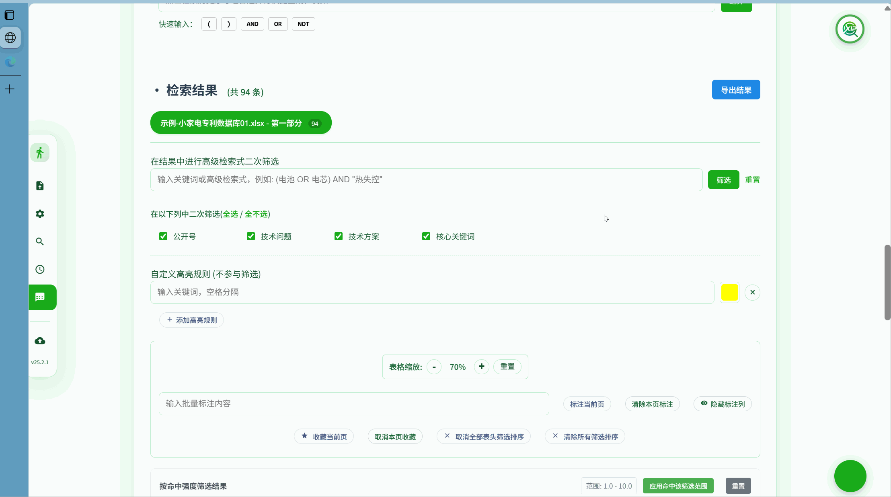
</script>

<script type="text/html" id="tpl-global-nav">
    <h1>全局功能快捷导航</h1>
    <p>为了提升您在平台各主要功能区之间切换的效率，我们在页面左侧提供了一个悬浮的全局快捷导航栏。</p>
    
    <ul>
        <li><strong>快速跳转：</strong> 点击导航栏上的图标，如“数据源定义”、“检索规则”等，页面会自动平滑滚动到对应的功能卡片区域。</li>
        <li><strong>智能高亮：</strong> 当您滚动页面时，导航栏会自动高亮当前处于您视野范围内的功能区所对应的图标，让您时刻清楚自己所在的流程位置。</li>
        <li><strong>自动显隐：</strong> 导航栏在您停止滚动一段时间后会自动收起，以保持界面整洁。当您将鼠标移动到屏幕左侧边缘时，它会再次出现。</li>
    </ul>
    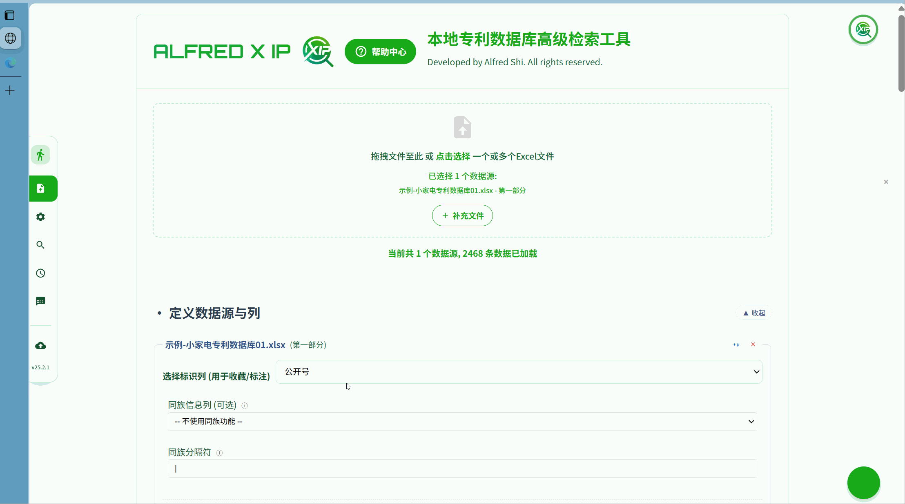
</script>

<script type="text/html" id="tpl-config-management">
    <h1>缓存配置管理</h1>
    <p>平台提供了强大的配置管理功能，支持将您的所有工作偏好、检索历史、收藏内容等导出为文件，并可选择性地导入到其他设备或恢复之前的工作状态。</p>

    <h2>配置导出</h2>
    <p>您可以一键导出平台的完整配置，包括所有本地保存的数据和用户偏好设置。</p>

    <h3>导出内容包括</h3>
    <ul>
        <li><strong>数据源配置:</strong> 各数据源的列配置(标识列、检索列、显示列、同族列等)及字段权重设置。</li>
        <li><strong>检索历史:</strong> 所有保存的检索记录，包括检索式、结果数量、执行时间等。</li>
        <li><strong>检索式收藏:</strong> 您收藏的所有检索式及其自定义名称。</li>
        <li><strong>结果收藏夹:</strong> 收藏的检索结果条目及其标注信息。</li>
        <li><strong>自定义高亮规则:</strong> 您设置的所有自定义关键词高亮规则。</li>
        <li><strong>表格布局偏好:</strong> 列宽、列顺序、排序状态等表格个性化设置。</li>
        <li><strong>界面偏好:</strong> 表格缩放比例、收藏夹展开状态等UI设置。</li>
    </ul>

    <h3>如何导出</h3>
    <ol>
        <li>点击左侧全局导航栏底部的缓存管理按钮。</li>
        <li>选择"导出缓存数据"选项。</li>
        <li>系统会生成一个JSON格式的配置文件(文件名如<code>alfred_config_2025XXXX.json</code>)，并自动下载到您的本地。</li>
    </ol>
    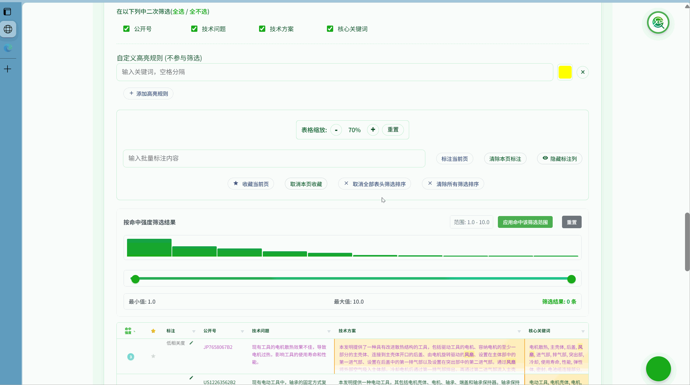

    <h2>选择性导入配置</h2>
    <p>与全量导入不同，选择性导入允许您<strong>精确控制</strong>要恢复哪些配置项,而不会覆盖您不想改变的设置。</p>

    <h3>如何使用选择性导入</h3>
    <ol>
        <li>点击页面右上角的"设置"或"更多选项"按钮。</li>
        <li>选择"导入配置"选项。</li>
        <li>选择之前导出的配置文件(<code>.json</code>)。</li>
        <li>系统会弹出<strong>配置项选择器</strong>窗口，列出文件中包含的所有配置类别。</li>
        <li><strong>勾选您想导入的配置项</strong>，例如:
            <ul>
                <li>仅导入"检索式收藏"和"自定义高亮规则"</li>
                <li>仅导入"数据源配置"，保留当前的检索历史和收藏夹</li>
            </ul>
        </li>
        <li>点击"确认导入"按钮，平台会<strong>仅恢复您选中的配置项</strong>，其他配置保持不变。</li>
    </ol>

    <h3>配置项说明</h3>
    <table>
        <thead><tr><th>配置项</th><th>说明</th><th>推荐导入场景</th></tr></thead>
        <tbody>
            <tr><td>数据源配置</td><td>列配置、字段权重</td><td>更换设备时保持数据源设置一致</td></tr>
            <tr><td>检索历史</td><td>历史检索记录</td><td>恢复之前的检索工作流程</td></tr>
            <tr><td>检索式收藏</td><td>收藏的检索式库</td><td>在新设备上使用常用检索式</td></tr>
            <tr><td>结果收藏夹</td><td>收藏的结果及标注</td><td>恢复重要的浏览关注成果</td></tr>
            <tr><td>高亮规则</td><td>自定义关键词高亮</td><td>在多设备间同步阅读偏好</td></tr>
            <tr><td>表格布局</td><td>列宽、列顺序等</td><td>保持个性化的表格视图</td></tr>
            <tr><td>界面偏好</td><td>表格缩放、UI状态等</td><td>统一工作界面体验</td></tr>
        </tbody>
    </table>
    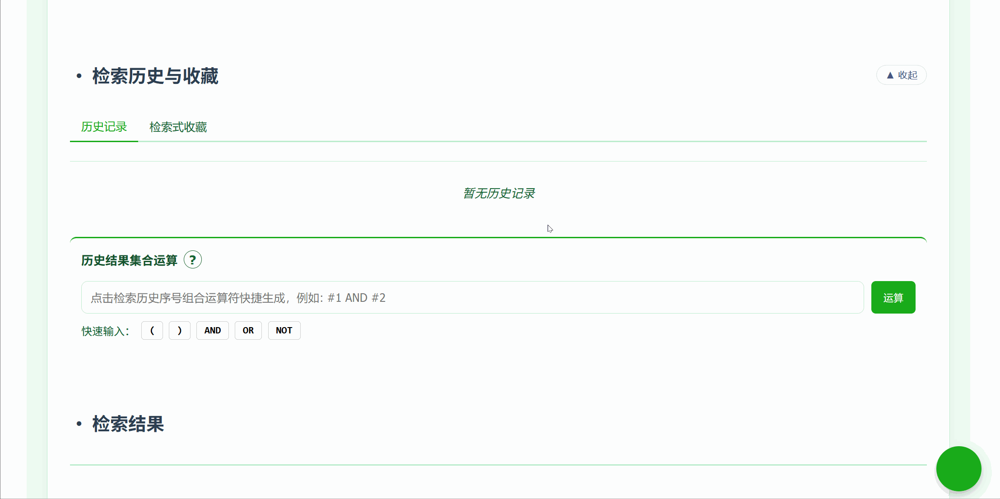
    <h3>应用场景</h3>
    <ul>
        <li><strong>团队协作:</strong> 团队负责人导出标准配置文件，成员选择性导入"数据源配置"和"检索式收藏",快速统一工作环境。</li>
        <li><strong>设备迁移:</strong> 从旧电脑迁移到新电脑时，选择性导入所有配置,无缝继续工作。</li>
        <li><strong>备份与恢复:</strong> 定期导出配置作为备份，如遇浏览器缓存清除等情况,可快速恢复工作状态。</li>
        <li><strong>试验性操作:</strong> 在尝试新的配置或大规模修改前，先导出当前配置作为"存档点"，出问题时可快速回滚。</li>
        <li><strong>部分同步:</strong> 在家庭和办公室电脑间，只同步"检索式收藏"和"高亮规则"，保持各自独立的检索历史和收藏夹。</li>
    </ul>

    <div class="alert alert-warning">
        <div class="alert-icon"><svg xmlns="http://www.w3.org/2000/svg" width="24" height="24" viewBox="0 0 24 24" fill="none" stroke="currentColor" stroke-width="2" stroke-linecap="round" stroke-linejoin="round"><path d="m21.73 18-8-14a2 2 0 0 0-3.46 0l-8 14A2 2 0 0 0 4 21h16a2 2 0 0 0 1.73-3Z"></path><line x1="12" y1="9" x2="12" y2="13"></line><line x1="12" y1="17" x2="12.01" y2="17"></line></svg></div>
        <div><strong>重要提示:</strong> 导入配置会<strong>覆盖</strong>当前对应的配置项。建议在导入前先导出当前配置作为备份。选择性导入功能可以最大程度避免误覆盖。</div>
    </div>

</script>

<script type="text/html" id="tpl-undo-redo">
    <h1>撤销与重做、操作历史管理</h1>
    <p>为确保您的操作安全，平台提供了完善的撤销/重做机制。不仅支持大部分工作操作的回退，还提供了可视化的操作历史记录，让您精确控制工作流程。</p>

    <h2>支持撤销/重做的操作</h2>
    <p>以下操作都可以通过撤销/重做功能来回退和恢复：</p>
    <ul>
        <li>收藏或取消收藏一条检索结果</li>
        <li>清空整个结果收藏夹</li>
        <li>添加、修改或清除一条标注</li>
        <li>所有批量操作（批量收藏、批量标注等）</li>
        <li>删除一条历史记录或检索式收藏</li>
        <li>清空各类输入框（如检索式、二次筛选、集合运算等）</li>
        <li>修改数据源配置（列配置、字段权重等）</li>
        <li>添加或删除自定义高亮规则</li>
    </ul>

    <h2>基本使用</h2>
    <ul>
        <li><strong>撤销：</strong> 点击页面左下角的"撤销"按钮，或使用快捷键 <code>Ctrl+Z</code> (Windows) / <code>Cmd+Z</code> (Mac)。</li>
        <li><strong>重做：</strong> 当您执行过撤销操作后，"重做"按钮会变为可用。点击它可以恢复您刚才撤销的操作。快捷键是 <code>Ctrl+Y</code> (Windows) / <code>Cmd+Shift+Z</code> (Mac)。</li>
        <li><strong>连续撤销：</strong> 可以连续多次点击撤销，一步步回退到更早的操作状态。</li>
    </ul>

    <h2>操作历史记录可视化（新功能）</h2>
    <p>平台新增了可视化的操作历史记录面板，让您可以更直观地查看和管理操作历史。</p>

    <h3>查看操作历史</h3>
    <ul>
        <li><strong>打开历史面板：</strong> 点击页面左下角撤销/重做按钮旁边的"历史记录"图标（通常为时钟或列表图标）。</li>
        <li><strong>操作列表：</strong> 面板中会显示最近的所有可撤销操作，按时间倒序排列，最新的操作在最上方。</li>
        <li><strong>操作详情：</strong> 每条记录会显示操作类型、操作对象、操作时间等详细信息</li>
        <li><strong>当前状态指示：</strong> 当前所处的操作状态会被高亮显示，您可以清楚地看到自己在操作链上的位置。</li>
    </ul>

    <h3>直接恢复到历史状态</h3>
    <p>您可以直接跳转到任意历史状态，而无需一步步撤销。</p>
    <ol>
        <li>在操作历史面板中，浏览您的操作记录。</li>
        <li>找到您想恢复到的某个历史状态（例如"执行检索 - 电池 AND 安全性"）。</li>
        <li><strong>直接点击</strong>该条记录。</li>
        <li>平台会<strong>立即恢复</strong>到该操作执行后的状态，包括：
            <ul>
                <li>检索结果和筛选条件</li>
                <li>收藏夹内容</li>
                <li>标注信息</li>
                <li>配置设置</li>
            </ul>
        </li>
        <li>恢复后，您依然可以继续撤销/重做，或跳转到其他历史状态。</li>
    </ol>
    
    <h3>应用场景</h3>
    <ul>
        <li><strong>快速试错：</strong> 尝试不同的检索策略或标注方案，不满意时一键跳回某个满意的历史状态。</li>
        <li><strong>对比分析：</strong> 在不同的操作状态间快速切换，对比不同检索条件或筛选方案的效果。</li>
        <li><strong>误操作恢复：</strong> 不小心执行了批量清除等操作时，立即从历史面板恢复到操作前的状态。</li>
        <li><strong>工作流程回溯：</strong> 回顾并复现之前某个时刻的工作状态，例如恢复到昨天某次检索的完整环境。</li>
    </ul>

    <h3>操作历史管理</h3>
    <ul>
        <li><strong>历史容量：</strong> 平台默认保存最近100次可撤销操作，超出后最早的记录会被自动删除。</li>
        <li><strong>清空历史：</strong> 在历史面板底部，点击"清空历史"按钮可以清除所有操作记录（此操作本身不可撤销）。</li>
        <li><strong>持久化存储：</strong> 操作历史会保存在浏览器本地，刷新页面后依然可用（但清除浏览器缓存会导致历史丢失）。</li>
    </ul>

    <div class="alert alert-info">
        <div class="alert-icon"><svg xmlns="http://www.w3.org/2000/svg" width="24" height="24" viewBox="0 0 24 24" fill="none" stroke="currentColor" stroke-width="2" stroke-linecap="round" stroke-linejoin="round"><shield-check><path d="M12 22s8-4 8-10V5l-8-3-8 3v7c0 6 8 10 8 10z"></path><path d="m9 12 2 2 4-4"></path></shield-check></svg></div>
        <div><strong>安全保障：</strong> 增强的撤销/重做功能为您提供了完整的操作安全系统，让您可以尝试各种分析策略，随时回到任何满意的工作状态。</div>
    </div>

</script>
    
    <script>
        document.addEventListener('DOMContentLoaded', () => {
            // --- 元素引用 ---
            const navLinks = document.querySelectorAll('.nav-link');
            const contentFrame = document.getElementById('content-frame');
            const searchInput = document.getElementById('search-input');
            const searchBtn = document.getElementById('search-btn');
            const prevBtn = document.getElementById('prev-btn');
            const nextBtn = document.getElementById('next-btn');
            const counterEl = document.getElementById('search-results-counter');
            
            // --- 状态变量 ---
            const templates = {};
            let iframeContentReady = false;
            let currentHash = '';
            let currentKeyword = '';

            // 全局搜索状态
            let globalSearchResults = []; // 存储所有匹配结果 { pageId, indexInPage }
            let currentGlobalIndex = -1;

            // 当前页面搜索状态
            let localSearchResults = []; // 存储当前页面的高亮元素
            let currentLocalIndex = -1;

            // --- 模板加载 ---
            document.querySelectorAll('script[type="text/html"]').forEach(tpl => {
                if(tpl.innerHTML.length > 20) {
                   templates[tpl.id.replace('tpl-', '')] = tpl.innerHTML;
                }
            });

            const styleContent = document.head.querySelector('style').innerHTML;

            // --- 核心函数 ---

            function initIframe() {
                if (iframeContentReady) return;
                const iframeDoc = contentFrame.contentDocument || contentFrame.contentWindow.document;
                iframeDoc.open();
                const highlightStyle = `
                    .search-highlight { background-color: var(--search-highlight-color); color: #000; border-radius: 3px; transition: background-color 0.3s; }
                    .search-highlight.active { background-color: var(--search-highlight-active-color); color: #fff; }
                `;
                iframeDoc.write(`
                    <!DOCTYPE html><html lang="zh-CN">
                    <head><meta charset="UTF-8"><style>${styleContent}\n${highlightStyle}</style></head>
                    <body><div class="content-wrapper"></div></body></html>
                `);
                iframeDoc.close();
                iframeContentReady = true;
            }

            /**
             * [已优化] 加载指定页面内容到 iframe，并提供一个加载完成后的回调
             * 优化点: 确保无论页面是否已加载，都会执行高亮和回调，修复了搜索后不立即跳转的BUG。
             * @param {string} hash - 页面hash, e.g., '#introduction'
             * @param {function} [onComplete] - 页面加载和高亮完成后执行的回调
             */
            function loadContent(hash, onComplete) {
                const targetId = hash ? hash.substring(1) : 'introduction';
                const pageIsDifferent = `#${targetId}` !== currentHash;

                // 步骤 1: 仅在目标页面与当前页面不同时才加载新内容
                if (pageIsDifferent) {
                    currentHash = `#${targetId}`;
                    initIframe();
                    const templateContent = templates[targetId];
                    if (templateContent) {
                        const iframeDoc = contentFrame.contentDocument || contentFrame.contentWindow.document;
                        const contentWrapper = iframeDoc.querySelector('.content-wrapper');
                        contentWrapper.innerHTML = templateContent;
                        updateActiveLink(hash);
                    }
                }

                // 步骤 2: 无论页面是否重新加载，都必须执行高亮操作。
                // 这是修复问题的关键，因为即使用户停留在同一页面，搜索词也可能已改变。
                performLocalHighlight();

                // 步骤 3: 在高亮完成后，执行回调（例如：跳转到某个高亮项）
                if (onComplete) {
                    onComplete();
                }
            }


            function updateActiveLink(hash) {
                const targetHash = hash || '#introduction';
                navLinks.forEach(link => {
                    const isActive = link.hash === targetHash;
                    link.classList.toggle('active', isActive);
                    // 自动展开包含 active 链接的 details 元素
                    if(isActive) {
                        const detailsParent = link.closest('details');
                        if(detailsParent && !detailsParent.open) {
                            detailsParent.open = true;
                        }
                    }
                });
            }

            /**
             * 清理当前 iframe 中的所有高亮
             */
            function clearLocalHighlights() {
                const iframeDoc = contentFrame.contentDocument;
                if (!iframeDoc) return;
                
                const marks = iframeDoc.querySelectorAll('mark.search-highlight');
                marks.forEach(mark => {
                    const parent = mark.parentNode;
                    if (parent) {
                        mark.replaceWith(...mark.childNodes);
                        parent.normalize();
                    }
                });
                localSearchResults = [];
                currentLocalIndex = -1;
            }

            /**
             * 在当前 iframe 内容中执行高亮，但不改变全局状态
             */
            function performLocalHighlight() {
                clearLocalHighlights();
                if (!currentKeyword || !iframeContentReady) return;

                const iframeDoc = contentFrame.contentDocument;
                const contentWrapper = iframeDoc.querySelector('.content-wrapper');
                if (!contentWrapper) return;

                try {
                    const regex = new RegExp(currentKeyword, 'gi');
                    
                    function highlightInNode(node) {
                        if (node.nodeType === Node.TEXT_NODE) {
                            const text = node.textContent;
                            if (regex.test(text)) {
                                const newNode = iframeDoc.createElement('span');
                                newNode.innerHTML = text.replace(regex, (match) => `<mark class="search-highlight">${match}</mark>`);
                                node.replaceWith(...newNode.childNodes);
                            }
                        } else if (node.nodeType === Node.ELEMENT_NODE && !['SCRIPT', 'STYLE', 'NOSCRIPT'].includes(node.tagName.toUpperCase())) {
                            Array.from(node.childNodes).forEach(highlightInNode);
                        }
                    }
                    
                    highlightInNode(contentWrapper);
                    localSearchResults = Array.from(iframeDoc.querySelectorAll('mark.search-highlight'));
                } catch(e) {
                    console.error("Search regex error:", e);
                }
            }
            
            function triggerGlobalSearch() {
                const keyword = searchInput.value.trim();
                currentKeyword = keyword;
                
                globalSearchResults = [];
                currentGlobalIndex = -1;
                clearLocalHighlights();

                if (!keyword) {
                    updateSearchUI();
                    return;
                }

                try {
                    const regex = new RegExp(keyword, 'gi');
                    const tempDiv = document.createElement('div');

                    Object.keys(templates).forEach(pageId => {
                        tempDiv.innerHTML = templates[pageId];
                        const textContent = tempDiv.textContent;
                        let match;
                        let pageIndexCounter = 0;
                        while ((match = regex.exec(textContent)) !== null) {
                            globalSearchResults.push({
                                pageId: pageId,
                                indexInPage: pageIndexCounter,
                            });
                            pageIndexCounter++;
                        }
                    });
                    
                    if (globalSearchResults.length > 0) {
                        navigateToGlobalResult(0);
                    } else {
                         updateSearchUI();
                    }
                } catch (e) {
                    console.error("Search regex error:", e);
                    counterEl.textContent = "无效表达式";
                }
            }

            function navigateToGlobalResult(newIndex) {
                if (globalSearchResults.length === 0) return;

                if (newIndex < 0) newIndex = globalSearchResults.length - 1;
                if (newIndex >= globalSearchResults.length) newIndex = 0;
                
                currentGlobalIndex = newIndex;
                
                const targetResult = globalSearchResults[currentGlobalIndex];
                const targetHash = `#${targetResult.pageId}`;
                
                // 使用优化后的 loadContent，它会确保在跳转前完成高亮
                loadContent(targetHash, () => {
                    navigateToLocalResult(targetResult.indexInPage);
                });

                updateSearchUI();
            }

            function navigateToLocalResult(index) {
                if (localSearchResults.length === 0 || index < 0 || index >= localSearchResults.length) return;
                
                if (currentLocalIndex !== -1 && localSearchResults[currentLocalIndex]) {
                    localSearchResults[currentLocalIndex].classList.remove('active');
                }
                
                currentLocalIndex = index;
                const activeMark = localSearchResults[currentLocalIndex];

                if (activeMark) {
                    activeMark.classList.add('active');
                    activeMark.scrollIntoView({ behavior: 'smooth', block: 'center' });
                }
            }

            function updateSearchUI() {
                const total = globalSearchResults.length;
                if (total > 0) {
                    counterEl.textContent = `${currentGlobalIndex + 1} / ${total}`;
                    prevBtn.disabled = false;
                    nextBtn.disabled = false;
                } else {
                    counterEl.textContent = currentKeyword ? '0 / 0' : '';
                    prevBtn.disabled = true;
                    nextBtn.disabled = true;
                }
            }
            
            // --- 事件监听 ---

            document.querySelector('nav').addEventListener('click', (e) => {
                const link = e.target.closest('.nav-link');
                if (link && link.hash) {
                    e.preventDefault();
                    window.history.pushState(null, '', link.hash);
                    loadContent(link.hash, () => {
                        if(globalSearchResults.length > 0) {
                            const firstIndexOnThisPage = globalSearchResults.findIndex(res => `#${res.pageId}` === link.hash);
                            if(firstIndexOnThisPage !== -1) {
                                // 导航到当前页的第一个全局结果
                                navigateToGlobalResult(firstIndexOnThisPage);
                            }
                        }
                    });
                }
            });

            window.addEventListener('popstate', () => {
                loadContent(window.location.hash || '#introduction');
            });
            
            searchBtn.addEventListener('click', triggerGlobalSearch);
            searchInput.addEventListener('keydown', (e) => {
                if (e.key === 'Enter') {
                    e.preventDefault();
                    triggerGlobalSearch();
                }
            });

            prevBtn.addEventListener('click', () => navigateToGlobalResult(currentGlobalIndex - 1));
            nextBtn.addEventListener('click', () => navigateToGlobalResult(currentGlobalIndex + 1));
            
            // --- 初始化 ---
            const initialHash = window.location.hash || '#introduction';
            setTimeout(() => {
                loadContent(initialHash);
                updateActiveLink(initialHash);
            }, 0);
        });
    </script>
</body>
</html>
